A2_flowkit · GPT-6 Astra · attempt njg9Rz7
Batch fk1 · job fk1_A_EXP22004263_21_Mar_2023_flowkit_gpt-6-astra · trial A_EXP22004263_21_Mar_2023_flowki__njg9Rz7. Long tool outputs are cut at 6,000 characters.
Score
0.63
0.63
Minutes
10.1
10.1
Agent cost
$3.81
$3.81
Steps
25
25
Screenshots / images
18
18
1
task prompt (instruction.md)
<environment_context> <cwd>/task</cwd> <shell>bash</shell> <current_date>2026-11-10</current_date> <timezone>Etc/UTC</timezone> <filesystem><workspace_roots><root>/task</root></workspace_roots><permission_profile type="disabled"><file_system type="unrestricted" /></permission_profile></filesystem> </environment_context>
2
user message
# Gate a CellEvent caspase-3/7 + Zombie NIR plate (mouse primary neurons)
**Goal:** with FlowKit (Python), gate all 30 wells of one Attune NxT plate as Cells → Single_Cells → Live → Caspase_pos, export per-well counts, and flag every well whose data should not be used.
## Experiment
- Assay: CellEvent Caspase-3/7 Green flow assay with Zombie NIR viability dye. Acquired 20-Mar-2023 on an Attune NxT, unfixed.
- Cells: WT and PGRN-KO mouse primary neurons (DIV8).
- Treatment: camptothecin 1, 5, 10 or 20 µM (two wells each), DMSO vehicle, or no treatment (NT), for 5 h.
- Staining after treatment: Zombie NIR (1:500, 10 min), trypsin harvest, CellEvent Caspase-3/7 (1:1000, 30 min, 37 °C).
- Per-well genotype, treatment and stain: `/task/inputs/plate_layout.csv`.
- Wells with `treatment = unrecorded` have no entry in the notebook plate map. Gate and report them like every other well.
- `replicate = 0` means the replicate number is not recorded.
## Inputs
| Path | Content |
|---|---|
| `/task/inputs/raw/` | 30 FCS files, one per well (`Caspase_primaryneurons_caspase_Group_<well>.fcs`) |
| `/task/inputs/plate_layout.csv` | `file, well, genotype, treatment, stain, replicate, is_control, control_type` |
| `/task/inputs/gating_strategy.md` | Written gating strategy: populations, channels, gate shapes |
## Channels
Each channel has a detector ID (`$PnN`) and a text label stored in the FCS file (`$PnS`).
| Detector | Name in the FCS file (`$PnS`) | Real dye | Marks |
|---|---|---|---|
| FSC-A / FSC-H | `FSC-A` / `FSC-H` | scatter | size |
| SSC-A / SSC-H | `SSC-A` / `SSC-H` | scatter | granularity; singlet discrimination |
| BL1-A | `AAV-GFP-Caspase-A` | CellEvent Caspase-3/7 Green | caspase-3/7-active cells |
| RL3-A | `LiveDead-Zombie NIR-A` | Zombie NIR | dead cells (bright); live = Zombie-negative |
| Time | `Time` | n/a | acquisition time |
The `AAV-GFP` part of the BL1-A label is stale: there is no AAV or GFP in this experiment. BL1-A carries CellEvent caspase only.
## Populations to report (exact names, in this order)
| # | Population | Parent | Channels | Definition |
|---|---|---|---|---|
| 1 | `Cells` | `all_events` | FSC-A, SSC-A | intact cells, debris excluded |
| 2 | `Single_Cells` | `Cells` | SSC-A, SSC-H | singlets |
| 3 | `Live` | `Single_Cells` | RL3-A (+ SSC-A) | Zombie NIR-negative |
| 4 | `Caspase_pos` | `Live` | BL1-A (+ SSC-A) | CellEvent caspase-3/7-positive |
Use these exact strings as the FlowKit gate names and in `counts.csv`.
## Controls (from the notebook plate map)
| Wells (WT / PGRN-KO) | Control | Use |
|---|---|---|
| A1 / C1 | NT, no stain | autofluorescence baseline for BL1-A and RL3-A |
| A2 / C2 | NT, Zombie NIR only | caspase-negative reference with viability dye present |
| A3 / C3 | NT, CellEvent caspase only | Zombie-negative reference with caspase dye present |
| A5 / C5 | DMSO vehicle, both dyes | vehicle control |
| A7 / C7 | NT, both dyes | untreated control |
## Procedure and tool rules
- Gating rules:
- Use the full data (no subsampling).
- Use one gate per population, applied to all wells.
## Deliverables (all in `/task/outputs/`)
| File | Content |
|---|---|
| `gates.xml` | Your gating strategy as GatingML 2.0, written with `flowkit.export_gatingml` (see *Software*). It must load with `flowkit.parse_gating_xml`. One gate per reported population, named exactly as the population. |
| `counts.csv` | Columns `file, well, population, count, parent_population, pct_of_parent` |
| `flags.csv` | Columns `file, well, usable, reason_category, evidence` |
| `notes.md` | At most one page with headings `## Gates`, `## Quality control`, `## Deviations from the strategy`, in that order |
**`counts.csv` rules**
- One row per file × population: 30 × 4 = 120 rows.
- `count`: integer events in the population.
- `parent_population`: `all_events` for `Cells`; otherwise the parent from the population table.
- `pct_of_parent`: count / parent count × 100, as a 0–100 float.
**`flags.csv` rules**
- One row per file (30 rows).
- `usable`: `yes` or `no`.
- `reason_category`: one of `ok`, `clog_or_interrupted_flow`, `ran_dry`, `too_few_events`, `saturation`, `bad_control`, `mislabeled_or_unexpected`, `other`.
- `usable = yes` requires `ok`.
- `usable = no` requires a category other than `ok`.
- Flag any well whose data should not be used.
- `evidence` on every `usable = no` row:
- must give well-specific numbers, time-resolved where relevant (e.g. event counts, event-rate behaviour over Time, % events at scale maximum);
- must include `confidence=high`, `confidence=medium` or `confidence=low`.
**`notes.md` rules**
- `## Gates`: how and why each gate was placed, including which control wells set each fluorescence boundary.
- `## Quality control`: how wells were judged.
- `## Deviations from the strategy`: every departure from `gating_strategy.md`, or "none".
## Time budget
2 hours.
## Software (FlowKit version of this task)
- **Python 3 with FlowKit 1.2.3** (plus flowio, numpy, pandas, scipy, matplotlib, openpyxl) is installed. There is no graphical analysis program.
- **Load** each file with `flowkit.Sample(path)`. Build **one** `flowkit.GatingStrategy` for all wells, with `flowkit.Dimension` and `flowkit.gates.RectangleGate`, `PolygonGate` or `EllipsoidGate` (no quadrant or Boolean gates).
- **Gate names** must be valid XML IDs: letters, digits and underscores, starting with a letter (no spaces or `+`).
- **One gate per reported population**, named exactly as the population and nested under its parent population (the first population's gate sits at the root). A population's events are its own gate within its parent.
- **Raw (uncompensated) data only.** Every gate dimension uses `compensation_ref="uncompensated"`; apply no compensation or spillover correction.
- **Channels.** FlowKit gate dimensions use the detector ID (`$PnN`, e.g. `BL1-A`), not the text label.
- **Transforms.** You may draw gates on transformed axes (for example `flowkit.transforms.LogicleTransform`, added with `add_transform` and referenced by `transformation_ref`).
- **Save** the strategy with `flowkit.export_gatingml(strategy, open("/task/outputs/gates.xml", "wb"))` and check that it reloads with `flowkit.parse_gating_xml`.
- **Counts.** `counts.csv` must be the counts these saved gates give on each file (`strategy.gate_sample(sample)`), with no per-well changes.
- **Looking at data.** Save plots as PNG files and open the image files to view them.
---
## How you work
You work in a **terminal** (bash, working directory `/task`).
- **Inputs** are in `/task/inputs/` (read-only). **Write every deliverable to `/task/outputs/`.** Only that folder is collected for grading.
- **Limits.** There is no limit on the number of actions; the only limit is the time budget above. Save `gates.xml` and your output files early and often.
3
agent
I’ll inspect the written strategy and controls, build one shared FlowKit hierarchy, then check each well for acquisition problems. I’ll save the gates and counts early and verify that the exported XML reproduces them.
tool call · exec
const results = await Promise.allSettled([
tools.exec_command({cmd:"pwd && rg --files -g 'AGENTS.md' -g '*.md' -g '*.csv' -g '*.fcs' /task | head -80",workdir:"/task",max_output_tokens:5000}),
tools.exec_command({cmd:"python - <<'PY'\nimport flowkit as fk, inspect\nprint('FlowKit', fk.__version__)\nprint('Sample', inspect.signature(fk.Sample))\nprint('Dimension', inspect.signature(fk.Dimension))\nprint('Rectangle', inspect.signature(fk.gates.RectangleGate))\nprint('Polygon', inspect.signature(fk.gates.PolygonGate))\nprint('Ellipsoid', inspect.signature(fk.gates.EllipsoidGate))\nprint('Logicle', inspect.signature(fk.transforms.LogicleTransform))\nprint('add_gate', inspect.signature(fk.GatingStrategy.add_gate))\nprint('gate_sample', inspect.signature(fk.GatingStrategy.gate_sample))\nPY",max_output_tokens:5000})
]);results.forEach(text)
text(ALL_TOOLS.filter(x=>/python|terminal|file/.test(x.name+" "+x.description)).map(x=>({name:x.name,description:x.description.slice(0,100)})).slice(0,20))
text(await tools.clock__curr_time({}));
tool output
Script completed
Wall time 1.9 seconds
Output:
{"status":"fulfilled","value":{"chunk_id":"d31bb4","wall_time_seconds":0.000002814,"exit_code":0,"original_token_count":476,"output":"/task\n/task/inputs/gating_strategy.md\n/task/inputs/plate_layout.csv\n/task/inputs/raw/Caspase_primaryneurons_caspase_Group_A3.fcs\n/task/inputs/raw/Caspase_primaryneurons_caspase_Group_A2.fcs\n/task/inputs/raw/Caspase_primaryneurons_caspase_Group_A8.fcs\n/task/inputs/raw/Caspase_primaryneurons_caspase_Group_A1.fcs\n/task/inputs/raw/Caspase_primaryneurons_caspase_Group_A5.fcs\n/task/inputs/raw/Caspase_primaryneurons_caspase_Group_A7.fcs\n/task/inputs/raw/Caspase_primaryneurons_caspase_Group_C10.fcs\n/task/inputs/raw/Caspase_primaryneurons_caspase_Group_D3.fcs\n/task/inputs/raw/Caspase_primaryneurons_caspase_Group_A11.fcs\n/task/inputs/raw/Caspase_primaryneurons_caspase_Group_A10.fcs\n/task/inputs/raw/Caspase_primaryneurons_caspase_Group_C9.fcs\n/task/inputs/raw/Caspase_primaryneurons_caspase_Group_B2.fcs\n/task/inputs/raw/Caspase_primaryneurons_caspase_Group_D5.fcs\n/task/inputs/raw/Caspase_primaryneurons_caspase_Group_C7.fcs\n/task/inputs/raw/Caspase_primaryneurons_caspase_Group_D6.fcs\n/task/inputs/raw/Caspase_primaryneurons_caspase_Group_C11.fcs\n/task/inputs/raw/Caspase_primaryneurons_caspase_Group_D2.fcs\n/task/inputs/raw/Caspase_primaryneurons_caspase_Group_C8.fcs\n/task/inputs/raw/Caspase_primaryneurons_caspase_Group_D1.fcs\n/task/inputs/raw/Caspase_primaryneurons_caspase_Group_B1.fcs\n/task/inputs/raw/Caspase_primaryneurons_caspase_Group_D4.fcs\n/task/inputs/raw/Caspase_primaryneurons_caspase_Group_C5.fcs\n/task/inputs/raw/Caspase_primaryneurons_caspase_Group_C3.fcs\n/task/inputs/raw/Caspase_primaryneurons_caspase_Group_B3.fcs\n/task/inputs/raw/Caspase_primaryneurons_caspase_Group_B5.fcs\n/task/inputs/raw/Caspase_primaryneurons_caspase_Group_B4.fcs\n/task/inputs/raw/Caspase_primaryneurons_caspase_Group_C2.fcs\n/task/inputs/raw/Caspase_primaryneurons_caspase_Group_C1.fcs\n/task/inputs/raw/Caspase_primaryneurons_caspase_Group_B6.fcs\n/task/inputs/raw/Caspase_primaryneurons_caspase_Group_A9.fcs\n"}}
{"status":"fulfilled","value":{"chunk_id":"0fa1b6","wall_time_seconds":1.755451179,"exit_code":0,"original_token_count":188,"output":"FlowKit 1.2.3\nSample (fcs_path_or_data, sample_id=None, filename_as_id=False, channel_labels=None, compensation=None, null_channel_list=None, ignore_offset_error=False, ignore_offset_discrepancy=False, use_header_offsets=False, cache_original_events=False, subsample=10000)\nDimension (dimension_id, compensation_ref='uncompensated', transformation_ref=None, range_min=None, range_max=None)\nRectangle (gate_name, dimensions, use_complement=False)\nPolygon (gate_name, dimensions, vertices, use_complement=False)\nEllipsoid (gate_name, dimensions, coordinates, covariance_matrix, distance_square)\nLogicle (param_t, param_w, param_m, param_a)\nadd_gate (self, gate, gate_path, sample_id=None)\ngate_sample (self, sample, cache_events=False, verbose=False)\n"}}
[{"name":"apply_patch","description":"The `apply_patch` tool can be used to edit files. This is a FREEFORM tool, so do not wrap the patch "},{"name":"list_mcp_resource_templates","description":"Lists resource templates provided by MCP servers. Parameterized resource templates allow servers to "},{"name":"list_mcp_resources","description":"Lists resources provided by MCP servers. Resources allow servers to share data that provides context"},{"name":"view_image","description":"View a local image file from the filesystem when visual inspection is needed. Use this for images al"}]
{"current_time":"2026-11-10 17:08:35 UTC"}tool call · exec
const r=await Promise.allSettled([
tools.exec_command({cmd:"cat /task/inputs/gating_strategy.md /task/inputs/plate_layout.csv",max_output_tokens:10000}),
tools.exec_command({cmd:"python - <<'PY'\nfrom pathlib import Path\nfor p in [Path('/AGENTS.md'),Path('/task/AGENTS.md'),Path('/task/inputs/AGENTS.md')]:\n if p.exists():print(p, '\\n', p.read_text())\nprint('FCS sizes')\nfor p in sorted(Path('/task/inputs/raw').glob('*.fcs')):print(p.name, p.stat().st_size)\nimport flowkit as fk,inspect\nprint(inspect.getsource(fk.Sample.__init__))\nPY",max_output_tokens:13000})
]);r.forEach(text)
tool output
Script completed
Wall time 0.9 seconds
Output:
{"status":"fulfilled","value":{"chunk_id":"2bddc2","wall_time_seconds":0.000002944,"exit_code":0,"original_token_count":1176,"output":"# Gating strategy: CellEvent caspase-3/7 + Zombie NIR, mouse primary neurons\n\nUse a single gate set and apply it unchanged to all 30 wells. Gate on uncompensated channels; apply no bleedthrough correction.\n\n## Sequence\n| # | Population | Parent | Plot (x vs y) | Original gate shape | FlowKit implementation |\n|---|---|---|---|---|---|\n| 1 | `Cells` | all events | FSC-A vs SSC-A | ellipse around the main cell cloud, excluding low-FSC debris | EllipsoidGate, or a PolygonGate approximating the ellipse |\n| 2 | `Single_Cells` | `Cells` | SSC-H vs SSC-A | 4-vertex polygon along the singlet diagonal | PolygonGate |\n| 3 | `Live` | `Single_Cells` | RL3-A (`LiveDead-Zombie NIR-A`) vs SSC-A | rectangle around the Zombie NIR-negative events | RectangleGate on RL3-A × SSC-A; a 1-D RectangleGate on RL3-A is also acceptable |\n| 4 | `Caspase_pos` | `Live` | BL1-A (`AAV-GFP-Caspase-A`) vs SSC-A | rectangle around the CellEvent-bright events | RectangleGate on BL1-A × SSC-A; a 1-D RectangleGate on BL1-A is also acceptable |\n\n## Placing the fluorescence boundaries\n- These are guidance, not a record of how the original cut-offs were chosen.\n- `Live` (RL3-A):\n - Use the no-stain wells (A1, C1) and the caspase-only wells (A3, C3) to see where Zombie NIR-negative events lie.\n - Use treated wells to confirm that a separate Zombie-bright population falls outside the gate.\n- `Caspase_pos` (BL1-A):\n - Use the no-stain wells (A1, C1) and the Zombie-only wells (A2, C2) to see where caspase-negative events end.\n - Place the lower boundary above that population.\n- SSC-A limits on the rectangles should keep the gated cells and exclude events at the scatter extremes. Record your reasoning in `notes.md`.\nfile,well,genotype,treatment,stain,replicate,is_control,control_type\nCaspase_primaryneurons_caspase_Group_A1.fcs,A1,WT,NT,unstained,1,yes,unstained\nCaspase_primaryneurons_caspase_Group_A2.fcs,A2,WT,NT,zombie_nir_only,1,yes,single_stain_zombie_nir\nCaspase_primaryneurons_caspase_Group_A3.fcs,A3,WT,NT,caspase_only,1,yes,single_stain_caspase\nCaspase_primaryneurons_caspase_Group_A5.fcs,A5,WT,DMSO,caspase_and_zombie_nir,1,yes,vehicle\nCaspase_primaryneurons_caspase_Group_A7.fcs,A7,WT,NT,caspase_and_zombie_nir,1,yes,untreated\nCaspase_primaryneurons_caspase_Group_A8.fcs,A8,WT,camptothecin_1uM,caspase_and_zombie_nir,1,no,none\nCaspase_primaryneurons_caspase_Group_A9.fcs,A9,WT,camptothecin_1uM,caspase_and_zombie_nir,2,no,none\nCaspase_primaryneurons_caspase_Group_A10.fcs,A10,WT,camptothecin_5uM,caspase_and_zombie_nir,1,no,none\nCaspase_primaryneurons_caspase_Group_A11.fcs,A11,WT,camptothecin_5uM,caspase_and_zombie_nir,2,no,none\nCaspase_primaryneurons_caspase_Group_B1.fcs,B1,WT,camptothecin_10uM,caspase_and_zombie_nir,1,no,none\nCaspase_primaryneurons_caspase_Group_B2.fcs,B2,WT,camptothecin_10uM,caspase_and_zombie_nir,2,no,none\nCaspase_primaryneurons_caspase_Group_B3.fcs,B3,WT,camptothecin_20uM,caspase_and_zombie_nir,1,no,none\nCaspase_primaryneurons_caspase_Group_B4.fcs,B4,WT,camptothecin_20uM,caspase_and_zombie_nir,2,no,none\nCaspase_primaryneurons_caspase_Group_B5.fcs,B5,WT,unrecorded,unrecorded,0,no,none\nCaspase_primaryneurons_caspase_Group_B6.fcs,B6,WT,unrecorded,unrecorded,0,no,none\nCaspase_primaryneurons_caspase_Group_C1.fcs,C1,PGRN_KO,NT,unstained,1,yes,unstained\nCaspase_primaryneurons_caspase_Group_C2.fcs,C2,PGRN_KO,NT,zombie_nir_only,1,yes,single_stain_zombie_nir\nCaspase_primaryneurons_caspase_Group_C3.fcs,C3,PGRN_KO,NT,caspase_only,1,yes,single_stain_caspase\nCaspase_primaryneurons_caspase_Group_C5.fcs,C5,PGRN_KO,DMSO,caspase_and_zombie_nir,1,yes,vehicle\nCaspase_primaryneurons_caspase_Group_C7.fcs,C7,PGRN_KO,NT,caspase_and_zombie_nir,1,yes,untreated\nCaspase_primaryneurons_caspase_Group_C8.fcs,C8,PGRN_KO,camptothecin_1uM,caspase_and_zombie_nir,1,no,none\nCaspase_primaryneurons_caspase_Group_C9.fcs,C9,PGRN_KO,camptothecin_1uM,caspase_and_zombie_nir,2,no,none\nCaspase_primaryneurons_caspase_Group_C10.fcs,C10,PGRN_KO,camptothecin_5uM,caspase_and_zombie_nir,1,no,none\nCaspase_primaryneurons_caspase_Group_C11.fcs,C11,PGRN_KO,camptothecin_5uM,caspase_and_zombie_nir,2,no,none\nCaspase_primaryneurons_caspase_Group_D1.fcs,D1,PGRN_KO,camptothecin_10uM,caspase_and_zombie_nir,1,no,none\nCaspase_primaryneurons_caspase_Group_D2.fcs,D2,PGRN_KO,camptothecin_10uM,caspase_and_zombie_nir,2,no,none\nCaspase_primaryneurons_caspase_Group_D3.fcs,D3,PGRN_KO,camptothecin_20uM,caspase_and_zombie_nir,1,no,none\nCaspase_primaryneurons_caspase_Group_D4.fcs,D4,PGRN_KO,camptothecin_20uM,caspase_and_zombie_nir,2,no,none\nCaspase_primaryneurons_caspase_Group_D5.fcs,D5,PGRN_KO,unrecorded,unrecorded,0,no,none\nCaspase_primaryneurons_caspase_Group_D6.fcs,D6,PGRN_KO,unrecorded,unrecorded,0,no,none\n"}}
{"status":"fulfilled","value":{"chunk_id":"90c8af","wall_time_seconds":0.762744592,"exit_code":0,"original_token_count":3260,"output":"FCS sizes\nCaspase_primaryneurons_caspase_Group_A1.fcs 3271636\nCaspase_primaryneurons_caspase_Group_A10.fcs 2345896\nCaspase_primaryneurons_caspase_Group_A11.fcs 2466856\nCaspase_primaryneurons_caspase_Group_A2.fcs 2924488\nCaspase_primaryneurons_caspase_Group_A3.fcs 3461788\nCaspase_primaryneurons_caspase_Group_A5.fcs 2663308\nCaspase_primaryneurons_caspase_Group_A7.fcs 2347300\nCaspase_primaryneurons_caspase_Group_A8.fcs 2175976\nCaspase_primaryneurons_caspase_Group_A9.fcs 2898208\nCaspase_primaryneurons_caspase_Group_B1.fcs 2107360\nCaspase_primaryneurons_caspase_Group_B2.fcs 1877680\nCaspase_primaryneurons_caspase_Group_B3.fcs 512020\nCaspase_primaryneurons_caspase_Group_B4.fcs 2124352\nCaspase_primaryneurons_caspase_Group_B5.fcs 1223344\nCaspase_primaryneurons_caspase_Group_B6.fcs 296344\nCaspase_primaryneurons_caspase_Group_C1.fcs 3457612\nCaspase_primaryneurons_caspase_Group_C10.fcs 3204892\nCaspase_prim
… [12,429 more characters not shown]tool call · exec
text(await tools.exec_command({cmd:"mkdir -p /task/outputs/plots\npython - <<'PY'\nimport flowkit as fk,inspect,numpy as np\ns=fk.Sample('/task/inputs/raw/Caspase_primaryneurons_caspase_Group_A1.fcs')\nprint(s.channels.to_string(index=False))\nprint({k:v for k,v in s.metadata.items() if not k.startswith('p')})\ne=s.get_events(source='raw',subsample=False)\nfor c in ['FSC-A','SSC-A','SSC-H','BL1-A','RL3-A','Time']:\n a=e[:,s.get_channel_index(c)];print(c, np.percentile(a,[0,1,10,25,50,75,90,99,100]))\nprint(inspect.signature(fk.Sample.get_events))\nprint(inspect.getsource(fk.gates.EllipsoidGate))\nPY",max_output_tokens:7000}));
tool output
Script completed
Wall time 0.9 seconds
Output:
{"chunk_id":"245f1b","wall_time_seconds":0.78373074,"exit_code":0,"original_token_count":1400,"output":" channel_number pnn pns png pne pnr\n 1 Time Time 1.0 (0.0, 0.0) 67108864.0\n 2 FSC-A FSC-A 1.0 (0.0, 0.0) 1048576.0\n 3 SSC-A SSC-A 1.0 (0.0, 0.0) 1048576.0\n 4 BL1-A AAV-GFP-Caspase-A 1.0 (0.0, 0.0) 1048576.0\n 5 RL3-A LiveDead-Zombie NIR-A 1.0 (0.0, 0.0) 1048576.0\n 6 FSC-H FSC-H 1.0 (0.0, 0.0) 1048576.0\n 7 SSC-H SSC-H 1.0 (0.0, 0.0) 1048576.0\n 8 FSC-W FSC-W 1.0 (0.0, 0.0) 1024.0\n 9 SSC-W SSC-W 1.0 (0.0, 0.0) 1024.0\n{'tot': '90651', 'mode': 'L', 'datatype': 'F', 'byteord': '1,2,3,4', 'cyt': '0A29009 Attune NxT Acoustic Focusing Cytometer (Lasers: BRV6Y)', 'sys': 'SEA11065ATTUNE Microsoft Windows 10 Enterprise LTSC', 'spillover': '2,BL1-A,RL3-A,1.000000,0.000000,0.000000,1.000000', 'btim': '14:47:52', 'cells': 'NA', 'com': 'NA', 'cytsn': '2AFC228071019', 'date': '20-Mar-2023', 'etim': '14:48:40', 'exp': 'NA', 'fil': 'A1.fcs', 'inst': 'NA', 'originality': 'Original', 'lost': '0', 'op': 'Jeff Huang', 'smno': 'Group', 'src': 'NA', 'timestep': '0.001', 'vol': '159000', 'wellid': 'A1', '#coincidentcount': '4247', '#flowrate': '200', '#laser1asf': '1.05', '#laser1color': 'Blue', '#laser1delay': '1100', '#laser2asf': '1.10', '#laser2color': 'Red', '#laser2delay': '1497', '#laser3asf': '0.86', '#laser3color': 'Violet', '#laser3delay': '715', '#laser4asf': '0.98', '#laser4color': 'Yellow', '#laser4delay': '303', '#laserconfig': 'BRV6Y', '#p1label': 'NA', '#p1target': 'NA', '#p4label': 'Caspase', '#p4target': 'AAV-GFP', '#p5label': 'Zombie NIR', '#p5target': 'LiveDead', '#ptdate': '20-Mar-2023', '#ptresult': 'Pass', '#tr1': 'OR_FSC,25000', '#widththreshold': '1000', '#winext': '0', 'hostid': 'SEA11065ATTUNE', 'begindata': '000000008192', 'enddata': '000003271627', 'nextdata': '000000000000', 'beginstext': '000000000000', 'endstext': '000000000000', 'beginanalysis': '000000000000', 'endanalysis': '000000000000'}\nFSC-A [ -65536. 25604. 38593. 65949. 165262. 335654.5 642186.\n 1048575. 1048575. ]\nSSC-A [ -65536. 7636. 63897. 133736. 366981. 1048575. 1048575. 1048575.\n 1048575.]\nSSC-H [ 0. 12187. 58384. 110537.5 236447. 670585. 1048575.\n 1048575. 1048575. ]\nBL1-A [-8.13200e+03 -9.30000e+01 3.00000e+00 5.80000e+01 2.60000e+02\n 1.40550e+03 4.35700e+03 2.61595e+04 2.96342e+05]\nRL3-A [-1.0550e+03 -1.0200e+02 -3.8000e+01 -1.0000e+00 5.1000e+01 1.7400e+02\n 5.1600e+02 3.3025e+03 5.8446e+04]\nTime [1.60000e-02 6.61000e-01 5.24900e+00 1.21710e+01 2.33870e+01 3.36340e+01\n 4.14530e+01 4.68075e+01 4.74770e+01]\n(self, source='xform', subsample=False, event_mask=None)\nclass EllipsoidGate(Gate):\n \"\"\"\n Represents a GatingML Ellipsoid Gate\n\n An EllipsoidGate must have at least 2 dimensions, and must specify a mean\n value (center of the ellipsoid), a covariance matrix, and a distance\n square (the square of the Mahalanobis distance).\n \"\"\"\n def __init__(\n self,\n gate_name,\n dimensions,\n coordinates,\n covariance_matrix,\n distance_square\n ):\n \"\"\"\n Create an EllipsoidGate instance.\n\n :param gate_name: text string for the name of the gate\n :param dimensions: list of Dimension instances\n :param coordinates: center point of the ellipsoid for n-dimensions\n :param covariance_matrix: Covariance matrix for the ellipsoid shape (NxN array)\n :param distance_square: square of the Mahalanobis distance, controlling\n the size of the ellipsoid. The distance square parameter is conceptually\n similar to the number of standard deviations representing the boundary\n for an n-dimensional distribution of points.\n \"\"\"\n super().__init__(\n gate_name,\n dimensions\n )\n self.gate_type = \"EllipsoidGate\"\n self.coordinates = coordinates\n self.covariance_matrix = covariance_matrix\n self.distance_square = distance_square\n\n if len(coordinates) == 1:\n raise ValueError(\n 'Ellipsoids must have at least 2 dimensions'\n )\n\n if len(covariance_matrix) != len(self.coordinates):\n raise ValueError(\n 'Covariance row entry value count must match # of dimensions'\n )\n\n def __repr__(self):\n return (\n f'{self.__class__.__name__}('\n f'{self.gate_name}, coords: {self.coordinates})'\n )\n\n def apply(self, df_events):\n \"\"\"\n Apply gate to events in given pandas DataFrame. The given DataFrame must have columns matching the\n Dimension IDs for the Dimension instances defined for the gate.\n\n :param df_events: pandas DataFrame with column labels matching Dimension IDs\n :return: NumPy array of boolean values for each event (True is inside gate)\n \"\"\"\n dim_ids_ordered = []\n for i, dim in enumerate(self.dimensions):\n if isinstance(dim, RatioDimension):\n dim_ids_ordered.append(dim.ratio_ref)\n else:\n dim_ids_ordered.append(dim.id)\n\n results = gating.points_in_ellipsoid(\n self.covariance_matrix,\n self.coordinates,\n self.distance_square,\n df_events[dim_ids_ordered].values # send a NumPy array and not a DataFrame\n )\n\n return results\n\n"}tool call · exec
text(await tools.apply_patch("*** Begin Patch\n*** Add File: /task/outputs/inspect_plate.py\n+\"\"\"Exploratory plots and numerical QC; every histogram uses all events.\"\"\"\n+from pathlib import Path\n+import json\n+import numpy as np\n+import pandas as pd\n+import flowkit as fk\n+import matplotlib\n+matplotlib.use('Agg')\n+import matplotlib.pyplot as plt\n+from matplotlib.colors import LogNorm\n+\n+OUT = Path('/task/outputs')\n+LAYOUT = pd.read_csv('/task/inputs/plate_layout.csv')\n+CHANNELS = ['FSC-A', 'SSC-A', 'SSC-H', 'BL1-A', 'RL3-A', 'Time']\n+SAMPLES = {}\n+METADATA = {}\n+ROWS = []\n+TIME_ROWS = []\n+for row in LAYOUT.itertuples(index=False):\n+ s = fk.Sample(Path('/task/inputs/raw') / row.file)\n+ e = s.get_events(source='raw', subsample=False)\n+ d = {c: e[:, s.get_channel_index(c)] for c in CHANNELS}\n+ SAMPLES[row.well] = d\n+ METADATA[row.well] = s.metadata\n+ t = d['Time']\n+ dt = np.diff(t)\n+ r = dict(well=row.well, n=len(t), t_first=t[0], t_last=t[-1],\n+ negative_time_steps=int((dt < 0).sum()), max_gap_s=float(dt.max()),\n+ gap_p99_s=float(np.quantile(dt, .99)),\n+ meta_btim=s.metadata.get('btim'), meta_etim=s.metadata.get('etim'),\n+ meta_wellid=s.metadata.get('wellid'), meta_volume=s.metadata.get('vol'))\n+ for c in CHANNELS[:-1]:\n+ a = d[c]\n+ scale = float(s.channels.set_index('pnn').loc[c, 'pnr'])\n+ for q in [.01,.1,.25,.5,.75,.9,.99]:\n+ r[f'{c}_q{q}'] = np.quantile(a,q)\n+ r[f'{c}_pct_max'] = 100 * np.mean(a >= scale-1)\n+ r[f'{c}_pct_nonpositive'] = 100 * np.mean(a <= 0)\n+ edges = np.arange(0, np.ceil(t.max()) + 1.0001, 1.0)\n+ n, _ = np.histogram(t, edges)\n+ r['rate_median_1s'] = np.median(n[1:-1])\n+ r['rate_min_1s'] = n[1:-1].min()\n+ r['rate_max_1s'] = n[1:-1].max()\n+ r['rate_empty_1s'] = (n[1:-1] == 0).sum()\n+ for i in range(len(edges)-1):\n+ m = (t >= edges[i]) & (t < edges[i+1])\n+ tr = dict(well=row.well, start_s=edges[i], end_s=edges[i+1], n=int(m.sum()))\n+ for c in CHANNELS[:-1]:\n+ tr[f'{c}_median'] = np.median(d[c][m]) if m.any() else np.nan\n+ tr[f'{c}_pct_max'] = 100*np.mean(d[c][m] >= 1048575) if m.any() else np.nan\n+ TIME_ROWS.append(tr)\n+ ROWS.append(r)\n+pd.DataFrame(ROWS).to_csv(OUT/'qc_initial_metrics.csv', index=False)\n+pd.DataFrame(TIME_ROWS).to_csv(OUT/'qc_time_bins.csv', index=False)\n+(OUT/'fcs_metadata.json').write_text(json.dumps(METADATA,indent=2))\n+\n+def panels(kind):\n+ fig, axes = plt.subplots(6,5,figsize=(20,21), constrained_layout=True)\n+ for row, ax in zip(LAYOUT.itertuples(index=False), axes.flat):\n+ d = SAMPLES[row.well]\n+ ax.set_title(f'{row.well} {row.treatment} (n={len(d[\"Time\"]):,})',fontsize=10)\n+ if kind.startswith('cells'):\n+ x,y=d['FSC-A'],d['SSC-A']\n+ if kind.endswith('log'):\n+ x,y=np.log10(np.maximum(x,1)),np.log10(np.maximum(y,1))\n+ limits=[[4.3,6.05],[3.2,6.05]]\n+ ax.set(xlabel='log10 FSC-A',ylabel='log10 SSC-A')\n+ else:\n+ x,y=x/1e6,y/1e6\n+ limits=[[0,1.06],[0,1.06]]\n+ ax.set(xlabel='FSC-A (millions)',ylabel='SSC-A (millions)')\n+ ax.hist2d(x,y,bins=150,range=limits,norm=LogNorm(vmin=1),cmap='viridis')\n+ elif kind.startswith('singlets'):\n+ m=np.ones(len(d['Time']),dtype=bool)\n+ if kind.endswith('restricted'):\n+ m=(d['FSC-A']>80000)&(d['FSC-A']<900000)&(d['SSC-A']<1000000)\n+ x,y=d['SSC-H'][m]/1e6,d['SSC-A'][m]/1e6\n+ ax.hist2d(x,y,bins=160,range=[[0,1.06],[0,1.06]],norm=LogNorm(vmin=1),cmap='viridis')\n+ ax.set(xlabel='SSC-H (millions)',ylabel='SSC-A (millions)')\n+ elif kind=='fluorescence':\n+ m=(d['FSC-A']>80000)&(d['FSC-A']<900000)&(d['SSC-A']<1000000)\n+ x,y=np.arcsinh(d['BL1-A'][m]/100),np.arcsinh(d['RL3-A'][m]/100)\n+ ax.hist2d(x,y,bins=120,range=[[-1.5,11],[-1.5,11]],norm=LogNorm(vmin=1),cmap='viridis')\n+ ax.set(xlabel='asinh(BL1-A / 100)',ylabel='asinh(RL3-A / 100)')\n+ elif kind=='time':\n+ td=pd.DataFrame(TIME_ROWS).query('well == @row.well')\n+ ax.step(td.start_s,td.n,where='post',color='black',lw=1)\n+ ax.set(xlabel='Time (s)',ylabel='Events per 1 s',ylim=(0,None))\n+ ax2=ax.twinx()\n+ ax2.plot(td.start_s+.5,td['FSC-A_median']/1e6,color='tab:blue',lw=1)\n+ ax2.plot(td.start_s+.5,td['SSC-A_median']/1e6,color='tab:orange',lw=1)\n+ ax2.set(ylim=(0,1.06),ylabel='Median scatter (millions)')\n+ fig.suptitle(kind+' — full events; time: black=rate, blue=FSC-A, orange=SSC-A',fontsize=16)\n+ fig.savefig(OUT/'plots'/f'overview_{kind}.png',dpi=125)\n+ plt.close(fig)\n+for k in ['cells_linear','cells_log','singlets_all','singlets_restricted','fluorescence','time']:\n+ panels(k)\n+print(pd.DataFrame(ROWS)[['well','n','t_last','max_gap_s','rate_median_1s','rate_min_1s','rate_max_1s','rate_empty_1s','FSC-A_pct_max','SSC-A_pct_max','SSC-H_pct_max','BL1-A_pct_max','RL3-A_pct_max']].round(3).to_string(index=False))\n*** End Patch"));
text(await tools.exec_command({cmd:"python /task/outputs/inspect_plate.py",yield_time_ms:1000,max_output_tokens:5000}))
tool output
Script completed
Wall time 1.2 seconds
Output:
{}
{"chunk_id":"b0fdea","wall_time_seconds":1.000278361,"session_id":35277,"original_token_count":0,"output":""}7
agent
The files match the expected detector IDs and plate map. The first control has substantial scatter clipping, so I’m checking whether that affects each well’s main cell population and whether the event rate stays stable over time.
tool call · exec
const r=await Promise.allSettled([
tools.exec_command({cmd:"python - <<'PY'\nimport flowkit as fk,inspect\nfrom flowkit._models.gating_results import GatingResults\nfor n in ['get_gate_count','get_gate_relative_percent','get_gate_membership']:\n print(n,inspect.signature(getattr(GatingResults,n)))\nprint('Log',inspect.signature(fk.transforms.LogTransform))\nprint('Asinh',inspect.signature(fk.transforms.AsinhTransform))\nprint('Linear',inspect.signature(fk.transforms.LinearTransform))\nprint(inspect.getsource(fk.GatingStrategy._preprocess_sample_events))\nPY",max_output_tokens:8000}),
tools.exec_command({cmd:"ls -lh /task/outputs/plots /task/outputs/qc_initial_metrics.csv",max_output_tokens:1000})
]);r.forEach(text)
text(await tools.write_stdin({session_id:35277,chars:"",yield_time_ms:1000,max_output_tokens:5000}));
tool output
Script completed
Wall time 6.0 seconds
Output:
{"status":"fulfilled","value":{"chunk_id":"f382f3","wall_time_seconds":0.80975002,"exit_code":0,"original_token_count":1135,"output":"get_gate_count (self, gate_name, gate_path=None)\nget_gate_relative_percent (self, gate_name, gate_path=None)\nget_gate_membership (self, gate_name, gate_path=None)\nLog (param_t, param_m)\nAsinh (param_t, param_m, param_a)\nLinear (param_t, param_a)\n def _preprocess_sample_events(self, sample, gate, cache_events=False):\n # TODO: consider making method public, could be useful for users\n pnn_labels = sample.pnn_labels\n pns_labels = sample.pns_labels\n # FlowJo replaces slashes with underscores, so make a set of labels with that replacement\n flowjo_pnn_labels = [label.replace('/', '_') for label in pnn_labels]\n\n dim_indices = []\n dim_ids = []\n dim_comp_refs = set()\n new_dims = []\n new_dim_ids = []\n dim_xform = []\n\n for dim in gate.dimensions:\n dim_comp = False\n if dim.compensation_ref not in [None, 'uncompensated']:\n dim_comp_refs.add(dim.compensation_ref)\n dim_comp = True\n\n if isinstance(dim, dimension.RatioDimension):\n # dimension is a transform of other dimensions\n new_dims.append(dim)\n new_dim_ids.append(dim.ratio_ref)\n continue\n elif isinstance(dim, dimension.QuadrantDivider):\n dim_id = dim.dimension_ref\n else:\n dim_id = dim.id\n\n if dim_id in pnn_labels:\n dim_indices.append(pnn_labels.index(dim_id))\n elif dim_id in pns_labels:\n dim_indices.append(pns_labels.index(dim_id))\n elif dim_id in flowjo_pnn_labels:\n dim_indices.append(flowjo_pnn_labels.index(dim_id))\n else:\n # for a referenced comp, the label may have been the\n # fluorochrome instead of the channel's PnN label. If so,\n # the referenced matrix object will also have the detector\n # names that will match\n if not dim_comp:\n raise LookupError(\n \"%s is not found as a channel label or channel reference in %s\" % (dim_id, sample)\n )\n matrix = self.comp_matrices[dim.compensation_ref]\n try:\n matrix_dim_idx = matrix.fluorochromes.index(dim_id)\n except ValueError:\n raise ValueError(\"%s not found in list of matrix fluorochromes\" % dim_id)\n detector = matrix.detectors[matrix_dim_idx]\n dim_indices.append(pnn_labels.index(detector))\n\n dim_ids.append(dim_id)\n\n dim_xform.append(dim.transformation_ref)\n\n # compensate will cache events regardless of cache_events arg value\n # this is much more universally useful to speed up analysis as the\n # same comp matrix is nearly always used for all sample gates.\n events = self._compensate_sample(dim_comp_refs, sample)\n\n for i, dim in enumerate(dim_indices):\n if dim_xform[i] is not None:\n if len(dim_comp_refs) > 0:\n comp_ref = list(dim_comp_refs)[0]\n else:\n comp_ref = None\n\n xform = self.transformations[dim_xform[i]]\n\n if cache_events:\n cached_events = self._get_cached_preprocessed_events(\n sample.id,\n comp_ref,\n dim_xform[i],\n dim_idx=dim\n )\n else:\n cached_events = None\n\n if cached_events is not None:\n events[:, [dim]] = cached_events\n else:\n xform_events = xform.apply(events[:, [dim]])\n events[:, [dim]] = xform_events\n if cache_events:\n self._cache_preprocessed_events(\n xform_events,\n sample.id,\n comp_ref,\n dim_xform[i],\n dim_idx=dim\n )\n\n df_events = pd.DataFrame(events[:, dim_indices], columns=dim_ids)\n if len(new_dims) > 0:\n new_dim_events = self._process_new_dims(sample, new_dims)\n df_new_dim_events = pd.DataFrame(new_dim_events, columns=new_dim_ids)\n df_events = pd.concat([df_events, df_new_dim_events], axis=1)\n\n return df_events\n\n"}}
{"status":"fulfilled","value":{"chunk_id":"e8b049","wall_time_seconds":0.000003025,"exit_code":0,"original_token_count":45,"output":"-rw-r--r-- 1 root root 20K Nov 10 17:09 /task/outputs/qc_initial_metrics.csv\n\n/task/outputs/plots:\ntotal 816K\n-rw-r--r-- 1 root root 815K Nov 10 17:09 overview_cells_linear.png\n"}}
{"chunk_id":"0d689c","wall_time_seconds":5.001184424,"session_id":35277,"original_token_count":0,"output":""}tool call · exec
const r=await tools.view_image({path:"/task/outputs/plots/overview_cells_linear.png"});image(r.image_url);
text(await tools.exec_command({cmd:"python - <<'PY'\nimport pandas as pd\nm=pd.read_csv('/task/outputs/qc_initial_metrics.csv')\nprint(m[['well','n','t_last','max_gap_s','rate_median_1s','rate_min_1s','rate_max_1s','rate_empty_1s','FSC-A_pct_max','SSC-A_pct_max','SSC-H_pct_max','BL1-A_pct_max','RL3-A_pct_max']].round(3).to_string(index=False))\nPY",max_output_tokens:4000}))
tool output
Script completed Wall time 0.3 seconds Output:
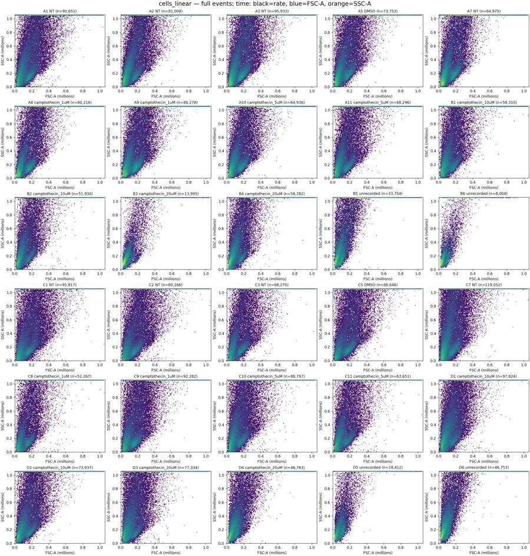
{"chunk_id":"ea0952","wall_time_seconds":0.111996949,"exit_code":0,"original_token_count":1264,"output":"well n t_last max_gap_s rate_median_1s rate_min_1s rate_max_1s rate_empty_1s FSC-A_pct_max SSC-A_pct_max SSC-H_pct_max BL1-A_pct_max RL3-A_pct_max\n A1 90651 47.477 0.088 1948.0 645 2468 0 4.234 30.421 13.509 0.000 0.000\n A2 81008 46.251 0.081 1734.0 279 2572 0 2.876 26.938 10.368 0.000 0.000\n A3 95933 47.097 0.023 2043.0 143 2574 0 1.835 26.688 8.490 0.001 0.000\n A5 73753 46.300 0.073 1614.0 377 2011 0 2.146 28.857 10.031 0.000 0.087\n A7 64975 46.240 0.016 1420.5 294 1788 0 1.100 26.404 7.761 0.000 0.003\n A8 60216 47.272 0.031 1276.0 101 1669 0 1.742 29.442 9.557 0.000 0.007\n A9 80278 46.415 0.045 1710.5 511 2161 0 1.798 24.789 8.457 0.002 0.004\n A10 64936 47.212 0.108 1415.0 157 1844 0 1.922 25.157 8.601 0.002 0.249\n A11 68296 46.350 0.182 1499.5 384 2022 0 2.945 27.185 9.683 0.003 0.069\n B1 58310 46.332 0.485 1266.5 417 2405 0 2.199 27.381 9.895 0.002 0.401\n B2 51930 47.158 0.128 1111.0 131 1401 0 3.229 23.940 9.884 0.006 0.166\n B3 13995 47.219 0.072 315.0 34 355 0 0.607 13.226 3.201 0.000 0.036\n B4 58782 46.176 0.249 1298.5 171 1774 0 2.303 20.069 8.019 0.000 0.180\n B5 33754 46.309 0.317 740.5 198 917 0 0.821 26.498 8.278 0.000 0.812\n B6 8004 47.385 0.101 170.0 16 212 0 0.225 15.442 2.886 0.000 0.075\n C1 95817 46.270 0.243 2026.0 506 3836 0 5.819 35.862 19.199 0.000 0.000\n C2 80166 47.368 0.257 1703.0 139 2797 0 4.688 33.970 17.033 0.000 0.000\n C3 68270 46.211 0.112 1483.5 255 1830 0 4.302 36.949 17.702 0.001 0.001\n C5 88646 47.356 0.048 1913.0 85 2345 0 5.383 39.809 17.206 0.000 0.050\n C7 119052 47.419 0.104 2651.0 223 4289 0 2.858 31.877 12.126 0.000 0.003\n C8 52267 46.212 0.077 1144.0 216 1433 0 3.696 35.523 16.685 0.000 0.063\n C9 92282 47.372 0.140 2027.0 95 2573 0 4.544 36.338 17.307 0.004 0.034\n C10 88797 47.169 0.334 1928.0 69 3462 0 4.398 30.372 14.764 0.005 0.144\n C11 63651 46.431 0.359 1367.0 211 2580 0 4.011 29.685 14.209 0.003 0.360\n D1 97824 47.418 0.258 2083.0 158 3386 0 4.068 24.658 12.047 0.006 0.337\n D2 73937 47.285 0.119 1601.0 41 2097 0 3.383 26.616 12.059 0.009 0.258\n D3 77334 46.431 0.289 1610.5 249 3840 0 3.401 28.470 12.588 0.010 0.494\n D4 46763 47.205 0.297 1021.0 16 1933 0 1.591 26.634 9.140 0.000 0.907\n D5 18412 46.374 0.310 403.5 150 562 0 1.369 25.380 9.966 0.005 1.054\n D6 46753 46.241 0.357 1055.5 227 1640 0 1.296 22.491 8.641 0.000 0.725\n"}tool call · exec
text(await tools.write_stdin({session_id:35277,chars:"",yield_time_ms:1000,max_output_tokens:5000}));
const r=await tools.view_image({path:"/task/outputs/plots/overview_cells_log.png"});image(r.image_url);
tool output
Script completed Wall time 0.0 seconds Output:
{"chunk_id":"96d89b","wall_time_seconds":0.000002804,"exit_code":0,"original_token_count":1264,"output":"well n t_last max_gap_s rate_median_1s rate_min_1s rate_max_1s rate_empty_1s FSC-A_pct_max SSC-A_pct_max SSC-H_pct_max BL1-A_pct_max RL3-A_pct_max\n A1 90651 47.477 0.088 1948.0 645 2468 0 4.234 30.421 13.509 0.000 0.000\n A2 81008 46.251 0.081 1734.0 279 2572 0 2.876 26.938 10.368 0.000 0.000\n A3 95933 47.097 0.023 2043.0 143 2574 0 1.835 26.688 8.490 0.001 0.000\n A5 73753 46.300 0.073 1614.0 377 2011 0 2.146 28.857 10.031 0.000 0.087\n A7 64975 46.240 0.016 1420.5 294 1788 0 1.100 26.404 7.761 0.000 0.003\n A8 60216 47.272 0.031 1276.0 101 1669 0 1.742 29.442 9.557 0.000 0.007\n A9 80278 46.415 0.045 1710.5 511 2161 0 1.798 24.789 8.457 0.002 0.004\n A10 64936 47.212 0.108 1415.0 157 1844 0 1.922 25.157 8.601 0.002 0.249\n A11 68296 46.350 0.182 1499.5 384 2022 0 2.945 27.185 9.683 0.003 0.069\n B1 58310 46.332 0.485 1266.5 417 2405 0 2.199 27.381 9.895 0.002 0.401\n B2 51930 47.158 0.128 1111.0 131 1401 0 3.229 23.940 9.884 0.006 0.166\n B3 13995 47.219 0.072 315.0 34 355 0 0.607 13.226 3.201 0.000 0.036\n B4 58782 46.176 0.249 1298.5 171 1774 0 2.303 20.069 8.019 0.000 0.180\n B5 33754 46.309 0.317 740.5 198 917 0 0.821 26.498 8.278 0.000 0.812\n B6 8004 47.385 0.101 170.0 16 212 0 0.225 15.442 2.886 0.000 0.075\n C1 95817 46.270 0.243 2026.0 506 3836 0 5.819 35.862 19.199 0.000 0.000\n C2 80166 47.368 0.257 1703.0 139 2797 0 4.688 33.970 17.033 0.000 0.000\n C3 68270 46.211 0.112 1483.5 255 1830 0 4.302 36.949 17.702 0.001 0.001\n C5 88646 47.356 0.048 1913.0 85 2345 0 5.383 39.809 17.206 0.000 0.050\n C7 119052 47.419 0.104 2651.0 223 4289 0 2.858 31.877 12.126 0.000 0.003\n C8 52267 46.212 0.077 1144.0 216 1433 0 3.696 35.523 16.685 0.000 0.063\n C9 92282 47.372 0.140 2027.0 95 2573 0 4.544 36.338 17.307 0.004 0.034\n C10 88797 47.169 0.334 1928.0 69 3462 0 4.398 30.372 14.764 0.005 0.144\n C11 63651 46.431 0.359 1367.0 211 2580 0 4.011 29.685 14.209 0.003 0.360\n D1 97824 47.418 0.258 2083.0 158 3386 0 4.068 24.658 12.047 0.006 0.337\n D2 73937 47.285 0.119 1601.0 41 2097 0 3.383 26.616 12.059 0.009 0.258\n D3 77334 46.431 0.289 1610.5 249 3840 0 3.401 28.470 12.588 0.010 0.494\n D4 46763 47.205 0.297 1021.0 16 1933 0 1.591 26.634 9.140 0.000 0.907\n D5 18412 46.374 0.310 403.5 150 562 0 1.369 25.380 9.966 0.005 1.054\n D6 46753 46.241 0.357 1055.5 227 1640 0 1.296 22.491 8.641 0.000 0.725\n"}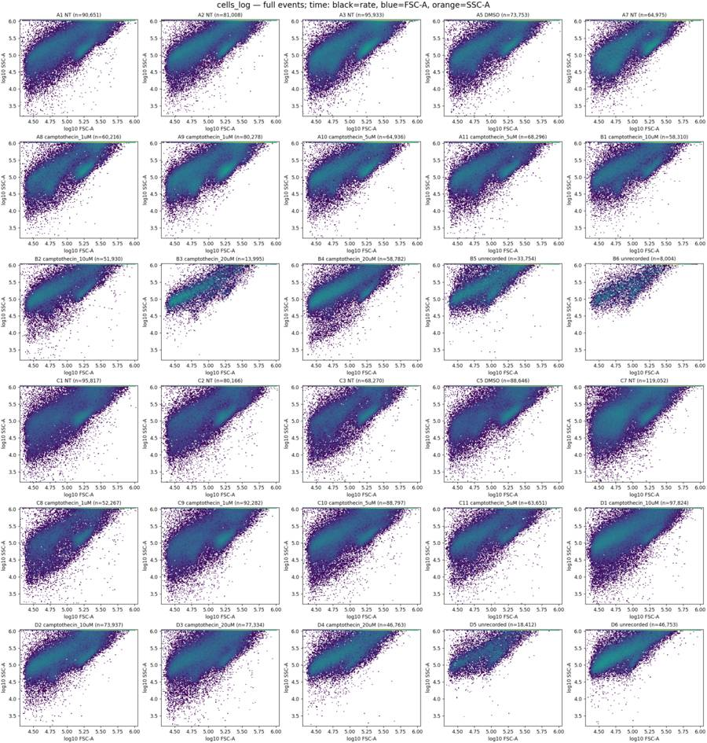
tool call · exec
for (const path of ["/task/outputs/plots/overview_time.png","/task/outputs/plots/overview_singlets_restricted.png","/task/outputs/plots/overview_fluorescence.png"]) {const r=await tools.view_image({path});image(r.image_url);}
tool output
Script completed Wall time 0.1 seconds Output:
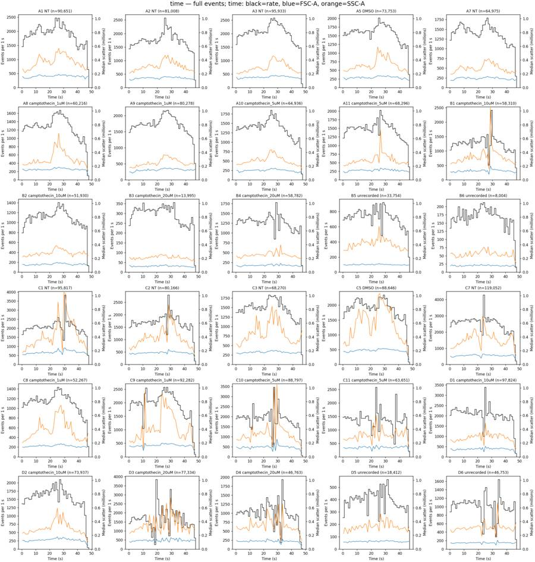
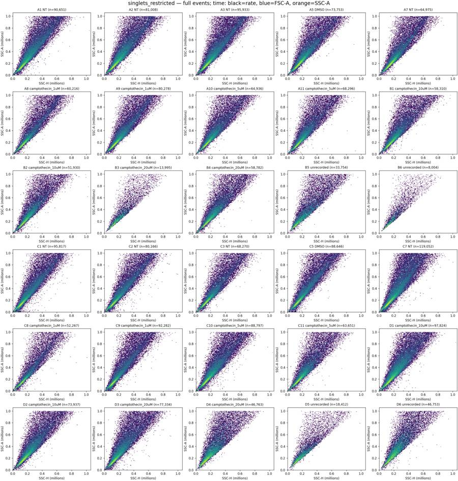
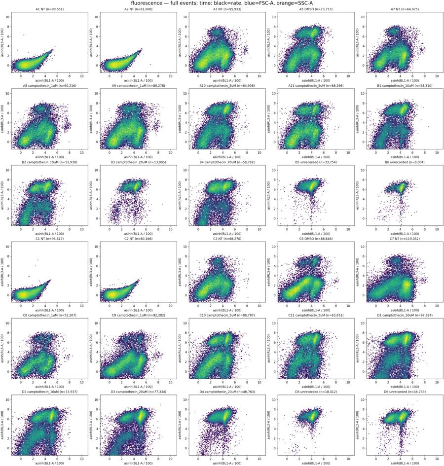
tool call · exec
text(await tools.clock__curr_time({}));
text(await tools.exec_command({cmd:"python - <<'PY'\nimport json,pandas as pd\nm=json.load(open('/task/outputs/fcs_metadata.json'))\nfor w,d in m.items():\n print(w,{k:d.get(k) for k in ['fil','wellid','btim','etim','vol','#flowrate','#coincidentcount']})\nPY",max_output_tokens:3500}))
tool output
Script completed
Wall time 0.3 seconds
Output:
{"current_time":"2026-11-10 17:10:07 UTC"}
{"chunk_id":"33c865","wall_time_seconds":0.106017895,"exit_code":0,"original_token_count":1067,"output":"A1 {'fil': 'A1.fcs', 'wellid': 'A1', 'btim': '14:47:52', 'etim': '14:48:40', 'vol': '159000', '#flowrate': '200', '#coincidentcount': '4247'}\nA2 {'fil': 'A2.fcs', 'wellid': 'A2', 'btim': '14:49:07', 'etim': '14:49:54', 'vol': '155000', '#flowrate': '200', '#coincidentcount': '3811'}\nA3 {'fil': 'A3.fcs', 'wellid': 'A3', 'btim': '14:50:20', 'etim': '14:51:08', 'vol': '157000', '#flowrate': '200', '#coincidentcount': '5071'}\nA5 {'fil': 'A5.fcs', 'wellid': 'A5', 'btim': '14:51:35', 'etim': '14:52:22', 'vol': '155000', '#flowrate': '200', '#coincidentcount': '4144'}\nA7 {'fil': 'A7.fcs', 'wellid': 'A7', 'btim': '14:52:49', 'etim': '14:53:36', 'vol': '155000', '#flowrate': '200', '#coincidentcount': '3144'}\nA8 {'fil': 'A8.fcs', 'wellid': 'A8', 'btim': '14:54:02', 'etim': '14:54:50', 'vol': '158000', '#flowrate': '200', '#coincidentcount': '2898'}\nA9 {'fil': 'A9.fcs', 'wellid': 'A9', 'btim': '14:55:17', 'etim': '14:56:04', 'vol': '155000', '#flowrate': '200', '#coincidentcount': '3428'}\nA10 {'fil': 'A10.fcs', 'wellid': 'A10', 'btim': '14:56:30', 'etim': '14:57:18', 'vol': '158000', '#flowrate': '200', '#coincidentcount': '2861'}\nA11 {'fil': 'A11.fcs', 'wellid': 'A11', 'btim': '14:57:45', 'etim': '14:58:32', 'vol': '155000', '#flowrate': '200', '#coincidentcount': '3380'}\nB1 {'fil': 'B1.fcs', 'wellid': 'B1', 'btim': '14:59:00', 'etim': '14:59:47', 'vol': '155000', '#flowrate': '200', '#coincidentcount': '2668'}\nB2 {'fil': 'B2.fcs', 'wellid': 'B2', 'btim': '15:00:13', 'etim': '15:01:01', 'vol': '158000', '#flowrate': '200', '#coincidentcount': '1945'}\nB3 {'fil': 'B3.fcs', 'wellid': 'B3', 'btim': '15:01:27', 'etim': '15:02:15', 'vol': '158000', '#flowrate': '200', '#coincidentcount': '134'}\nB4 {'fil': 'B4.fcs', 'wellid': 'B4', 'btim': '15:02:42', 'etim': '15:03:29', 'vol': '155000', '#flowrate': '200', '#coincidentcount': '1866'}\nB5 {'fil': 'B5.fcs', 'wellid': 'B5', 'btim': '15:03:56', 'etim': '15:04:43', 'vol': '155000', '#flowrate': '200', '#coincidentcount': '1077'}\nB6 {'fil': 'B6.fcs', 'wellid': 'B6', 'btim': '15:05:09', 'etim': '15:05:57', 'vol': '159000', '#flowrate': '200', '#coincidentcount': '81'}\nC1 {'fil': 'C1.fcs', 'wellid': 'C1', 'btim': '15:06:24', 'etim': '15:07:11', 'vol': '155000', '#flowrate': '200', '#coincidentcount': '6153'}\nC2 {'fil': 'C2.fcs', 'wellid': 'C2', 'btim': '15:07:37', 'etim': '15:08:25', 'vol': '159000', '#flowrate': '200', '#coincidentcount': '4357'}\nC3 {'fil': 'C3.fcs', 'wellid': 'C3', 'btim': '15:08:52', 'etim': '15:09:39', 'vol': '155000', '#flowrate': '200', '#coincidentcount': '3180'}\nC5 {'fil': 'C5.fcs', 'wellid': 'C5', 'btim': '15:10:05', 'etim': '15:10:53', 'vol': '159000', '#flowrate': '200', '#coincidentcount': '5380'}\nC7 {'fil': 'C7.fcs', 'wellid': 'C7', 'btim': '15:11:19', 'etim': '15:12:07', 'vol': '159000', '#flowrate': '200', '#coincidentcount': '9110'}\nC8 {'fil': 'C8.fcs', 'wellid': 'C8', 'btim': '15:12:35', 'etim': '15:13:21', 'vol': '155000', '#flowrate': '200', '#coincidentcount': '2542'}\nC9 {'fil': 'C9.fcs', 'wellid': 'C9', 'btim': '15:13:48', 'etim': '15:14:36', 'vol': '159000', '#flowrate': '200', '#coincidentcount': '5852'}\nC10 {'fil': 'C10.fcs', 'wellid': 'C10', 'btim': '15:15:02', 'etim': '15:15:50', 'vol': '158000', '#flowrate': '200', '#coincidentcount': '4556'}\nC11 {'fil': 'C11.fcs', 'wellid': 'C11', 'btim': '15:16:17', 'etim': '15:17:04', 'vol': '155000', '#flowrate': '200', '#coincidentcount': '2901'}\nD1 {'fil': 'D1.fcs', 'wellid': 'D1', 'btim': '15:17:30', 'etim': '15:18:18', 'vol': '159000', '#flowrate': '200', '#coincidentcount': '4462'}\nD2 {'fil': 'D2.fcs', 'wellid': 'D2', 'btim': '15:18:44', 'etim': '15:19:32', 'vol': '159000', '#flowrate': '200', '#coincidentcount': '2841'}\nD3 {'fil': 'D3.fcs', 'wellid': 'D3', 'btim': '15:19:59', 'etim': '15:20:46', 'vol': '155000', '#flowrate': '200', '#coincidentcount': '3701'}\nD4 {'fil': 'D4.fcs', 'wellid': 'D4', 'btim': '15:21:12', 'etim': '15:22:00', 'vol': '158000', '#flowrate': '200', '#coincidentcount': '1601'}\nD5 {'fil': 'D5.fcs', 'wellid': 'D5', 'btim': '15:22:27', 'etim': '15:23:15', 'vol': '155000', '#flowrate': '200', '#coincidentcount': '477'}\nD6 {'fil': 'D6.fcs', 'wellid': 'D6', 'btim': '15:23:41', 'etim': '15:24:28', 'vol': '155000', '#flowrate': '200', '#coincidentcount': '1579'}\n"}tool call · exec
text(await tools.apply_patch("*** Begin Patch\n*** Add File: /task/outputs/gate_plate.py\n+\"\"\"Reproduce the four shared FlowKit gates and the per-well event counts.\n+\n+All gating and histograms use every event. No compensation is applied.\n+\"\"\"\n+from pathlib import Path\n+import json\n+import numpy as np\n+import pandas as pd\n+import flowkit as fk\n+import matplotlib\n+matplotlib.use('Agg')\n+import matplotlib.pyplot as plt\n+from matplotlib.colors import LogNorm\n+from matplotlib.patches import Ellipse, Polygon\n+\n+OUT = Path('/task/outputs')\n+LAYOUT = pd.read_csv('/task/inputs/plate_layout.csv')\n+POPULATIONS = ['Cells', 'Single_Cells', 'Live', 'Caspase_pos']\n+PARENTS = ['all_events', 'Cells', 'Single_Cells', 'Live']\n+# The covariance below expresses the ellipse itself (distance_square=1).\n+CELL_CENTER = np.array([210000., 480000.])\n+CELL_RADII = np.array([165000., 460000.])\n+CELL_CORRELATION = .65\n+CELL_COVARIANCE = np.outer(CELL_RADII, CELL_RADII) * np.array([[1.,CELL_CORRELATION],[CELL_CORRELATION,1.]])\n+SINGLET_VERTICES = [[10000., 3200.], [700000., 776000.], [700000., 1170000.], [10000., 31500.]]\n+LIVE_MAX = 5000.\n+CASPASE_MIN = 5000.\n+\n+def make_strategy():\n+ gs = fk.GatingStrategy()\n+ def dim(c, lo=None, hi=None):\n+ return fk.Dimension(c, compensation_ref='uncompensated', range_min=lo, range_max=hi)\n+ gs.add_gate(fk.gates.EllipsoidGate('Cells', [dim('FSC-A'),dim('SSC-A')],\n+ CELL_CENTER.tolist(), CELL_COVARIANCE.tolist(), 1.), ('root',))\n+ gs.add_gate(fk.gates.PolygonGate('Single_Cells', [dim('SSC-H'),dim('SSC-A')],\n+ SINGLET_VERTICES), ('root','Cells'))\n+ gs.add_gate(fk.gates.RectangleGate('Live', [dim('RL3-A', hi=LIVE_MAX)]),\n+ ('root','Cells','Single_Cells'))\n+ gs.add_gate(fk.gates.RectangleGate('Caspase_pos', [dim('BL1-A', lo=CASPASE_MIN)]),\n+ ('root','Cells','Single_Cells','Live'))\n+ return gs\n+\n+def ellipse_xy(n=400):\n+ angles = np.linspace(0, 2*np.pi, n)\n+ return CELL_CENTER[:,None] + np.linalg.cholesky(CELL_COVARIANCE) @ np.array([np.cos(angles),np.sin(angles)])\n+\n+def run():\n+ strategy=make_strategy()\n+ with (OUT/'gates.xml').open('wb') as handle:\n+ fk.export_gatingml(strategy,handle)\n+ reloaded=fk.parse_gating_xml(str(OUT/'gates.xml'))\n+ counts=[]\n+ qc=[]\n+ data={}\n+ for row in LAYOUT.itertuples(index=False):\n+ sample=fk.Sample(Path('/task/inputs/raw')/row.file)\n+ events=sample.get_events(source='raw',subsample=False)\n+ result=reloaded.gate_sample(sample)\n+ original_result=strategy.gate_sample(sample)\n+ d={c:events[:,sample.get_channel_index(c)] for c in sample.pnn_labels}\n+ d['all_events']=np.ones(sample.event_count,dtype=bool)\n+ for pop,parent in zip(POPULATIONS,PARENTS):\n+ d[pop]=result.get_gate_membership(pop)\n+ assert np.array_equal(d[pop],original_result.get_gate_membership(pop))\n+ count=int(result.get_gate_count(pop))\n+ parent_count=int(d[parent].sum())\n+ assert count<=parent_count\n+ counts.append(dict(file=row.file,well=row.well,population=pop,count=count,\n+ parent_population=parent,pct_of_parent=100.*count/parent_count if parent_count else 0.))\n+ data[row.well]=d\n+ r=dict(well=row.well,all_events=sample.event_count,**{p:int(d[p].sum()) for p in POPULATIONS})\n+ for p in ['all_events','Cells','Single_Cells','Live']:\n+ for c in ['FSC-A','SSC-A','SSC-H','BL1-A','RL3-A']:\n+ a=d[c][d[p]]\n+ r[f'{p}_{c}_pct_max']=float(100*np.mean(a>=1048575)) if len(a) else np.nan\n+ if p in ['Single_Cells','Live']:\n+ for q in [.5,.9,.95,.99,.995,.999]:\n+ r[f'{p}_{c}_q{q}']=float(np.quantile(a,q)) if len(a) else np.nan\n+ r['singlet_RL3_gt_5000_pct']=100*np.mean(d['RL3-A'][d['Single_Cells']]>=5000)\n+ qc.append(r)\n+ pd.DataFrame(counts).to_csv(OUT/'counts.csv',index=False)\n+ pd.DataFrame(qc).to_csv(OUT/'qc_gated_metrics.csv',index=False)\n+ print(pd.DataFrame(qc)[['well','all_events']+POPULATIONS].to_string(index=False))\n+ # Full-event gate overlay pages: one row per well; each panel shows its parent.\n+ for batch_start in range(0,len(LAYOUT),5):\n+ batch=LAYOUT.iloc[batch_start:batch_start+5]\n+ fig,axes=plt.subplots(len(batch),4,figsize=(17,4*len(batch)),constrained_layout=True)\n+ for row,axs in zip(batch.itertuples(index=False),axes):\n+ d=data[row.well]\n+ for pop,parent,ax in zip(POPULATIONS,PARENTS,axs):\n+ m=d[parent]\n+ pct=100*d[pop].sum()/m.sum() if m.sum() else 0\n+ ax.set_title(f'{row.well} {pop}: {d[pop].sum():,} ({pct:.2f}%)',fontsize=11)\n+ if pop=='Cells':\n+ ax.hist2d(d['FSC-A'][m]/1e6,d['SSC-A'][m]/1e6,bins=160,range=[[0,1.06],[0,1.06]],norm=LogNorm(vmin=1),cmap='viridis')\n+ pts=ellipse_xy()/1e6\n+ ax.plot(pts[0],pts[1],color='red',lw=1.2)\n+ ax.set(xlabel='FSC-A (millions)',ylabel='SSC-A (millions)')\n+ elif pop=='Single_Cells':\n+ ax.hist2d(d['SSC-H'][m]/1e6,d['SSC-A'][m]/1e6,bins=150,range=[[0,.8],[0,1.06]],norm=LogNorm(vmin=1),cmap='viridis')\n+ pts=np.array(SINGLET_VERTICES+SINGLET_VERTICES[:1])/1e6\n+ ax.plot(pts[:,0],pts[:,1],color='red',lw=1.2)\n+ ax.set(xlabel='SSC-H (millions)',ylabel='SSC-A (millions)')\n+ else:\n+ c='RL3-A' if pop=='Live' else 'BL1-A'\n+ cut=LIVE_MAX if pop=='Live' else CASPASE_MIN\n+ x=np.arcsinh(d[c][m]/100)\n+ ax.hist2d(x,d['SSC-A'][m]/1e6,bins=140,range=[[-2,11],[0,1.06]],norm=LogNorm(vmin=1),cmap=
… [1,602 more characters not shown]tool output
Script completed
Wall time 1.2 seconds
Output:
{}
{"chunk_id":"5848f7","wall_time_seconds":1.001217861,"session_id":32994,"original_token_count":0,"output":""}tool call · exec
text(await tools.exec_command({cmd:"python - <<'PY'\nimport pandas as pd\nm=pd.read_csv('/task/outputs/qc_gated_metrics.csv')\ncols=['well','all_events','Cells','Single_Cells','Live','Caspase_pos','Single_Cells_RL3-A_q0.5','Single_Cells_RL3-A_q0.99','Live_BL1-A_q0.99','Live_BL1-A_q0.995','singlet_RL3_gt_5000_pct']\nprint(m[cols].round(3).to_string(index=False))\nPY",max_output_tokens:6000}))
text(await tools.write_stdin({session_id:32994,chars:"",yield_time_ms:1000,max_output_tokens:4000}))
tool output
Script completed
Wall time 0.3 seconds
Output:
{"chunk_id":"29888a","wall_time_seconds":0.112058551,"exit_code":0,"original_token_count":1318,"output":"well all_events Cells Single_Cells Live Caspase_pos Single_Cells_RL3-A_q0.5 Single_Cells_RL3-A_q0.99 Live_BL1-A_q0.99 Live_BL1-A_q0.995 singlet_RL3_gt_5000_pct\n A1 90651 38327 30242 30241 65 23.0 394.59 2965.60 3808.000 0.003\n A2 81008 35326 27456 27456 39 25.0 347.00 2745.45 3415.700 0.000\n A3 95933 41199 33349 31101 2150 159.0 52167.16 10320.00 13771.500 6.741\n A5 73753 30737 24618 18048 1406 326.0 82611.66 9831.54 11678.945 26.688\n A7 64975 27868 22687 20599 2239 164.0 73983.36 11525.04 14610.030 9.204\n A8 60216 24858 20449 18064 2187 167.0 64619.24 15842.65 44491.340 11.663\n A9 80278 36631 30098 26517 4412 202.0 76161.77 15451.24 23686.260 11.898\n A10 64936 29266 23426 15729 1183 439.0 92486.75 11171.40 14183.880 32.857\n A11 68296 29570 23910 17372 1607 288.0 77974.34 12138.55 15537.150 27.344\n B1 58310 25564 20140 11330 991 1333.5 98740.29 11480.45 14495.135 43.744\n B2 51930 23084 18625 9832 531 2794.0 89506.20 9303.56 11983.385 47.211\n B3 13995 7364 5688 1270 153 18109.0 101473.13 18835.44 25746.640 77.672\n B4 58782 27477 21872 8845 767 9543.5 86629.95 13820.76 20973.080 59.560\n B5 33754 15242 10928 350 14 27972.0 113692.53 9958.66 15670.005 96.797\n B6 8004 4352 3378 274 17 18282.5 75469.06 18488.63 26655.615 91.889\n C1 95817 34838 27996 27995 8 16.0 263.00 1702.12 2097.120 0.004\n C2 80166 30310 24871 24871 6 16.0 272.30 1766.60 2242.000 0.000\n C3 68270 24517 19607 17825 1397 191.0 65633.14 11046.96 13311.480 9.089\n C5 88646 31819 25845 23388 2215 146.0 66223.92 12015.04 15034.975 9.507\n C7 119052 44890 33191 31323 10537 108.0 61468.20 19233.02 22522.230 5.628\n C8 52267 18724 15316 13336 1354 161.0 69923.60 12445.10 15534.225 12.928\n C9 92282 33654 26289 23813 4351 141.0 59618.08 16096.08 21067.480 9.418\n C10 88797 34589 27160 18631 2054 425.0 83297.94 13374.70 16956.700 31.403\n C11 63651 25913 20236 12412 1354 974.0 91031.95 13016.03 17644.425 38.664\n D1 97824 41710 32238 14771 2351 7891.5 96138.89 16178.90 21672.650 54.181\n D2 73937 32924 25882 13730 2759 2848.0 96149.67 20957.26 30560.620 46.952\n D3 77334 32851 24482 10518 2332 9221.5 91955.13 20414.05 31671.105 57.038\n D4 46763 21487 14935 1561 153 20115.0 108264.46 20620.00 30657.200 89.548\n D5 18412 8873 6257 213 6 25250.0 102102.00 5704.52 6579.080 96.596\n D6 46753 20959 15628 840 40 17181.0 80980.42 11323.30 14882.220 94.625\n"}
{"chunk_id":"df7f2e","wall_time_seconds":0.000003064,"exit_code":0,"original_token_count":442,"output":"well all_events Cells Single_Cells Live Caspase_pos\n A1 90651 38327 30242 30241 65\n A2 81008 35326 27456 27456 39\n A3 95933 41199 33349 31101 2150\n A5 73753 30737 24618 18048 1406\n A7 64975 27868 22687 20599 2239\n A8 60216 24858 20449 18064 2187\n A9 80278 36631 3
… [1,361 more characters not shown]tool call · exec
for (const path of ["/task/outputs/plots/gates_1.png","/task/outputs/plots/gates_6.png","/task/outputs/plots/control_boundaries.png"]) {const r=await tools.view_image({path});image(r.image_url);}
tool output
Script completed Wall time 0.1 seconds Output:
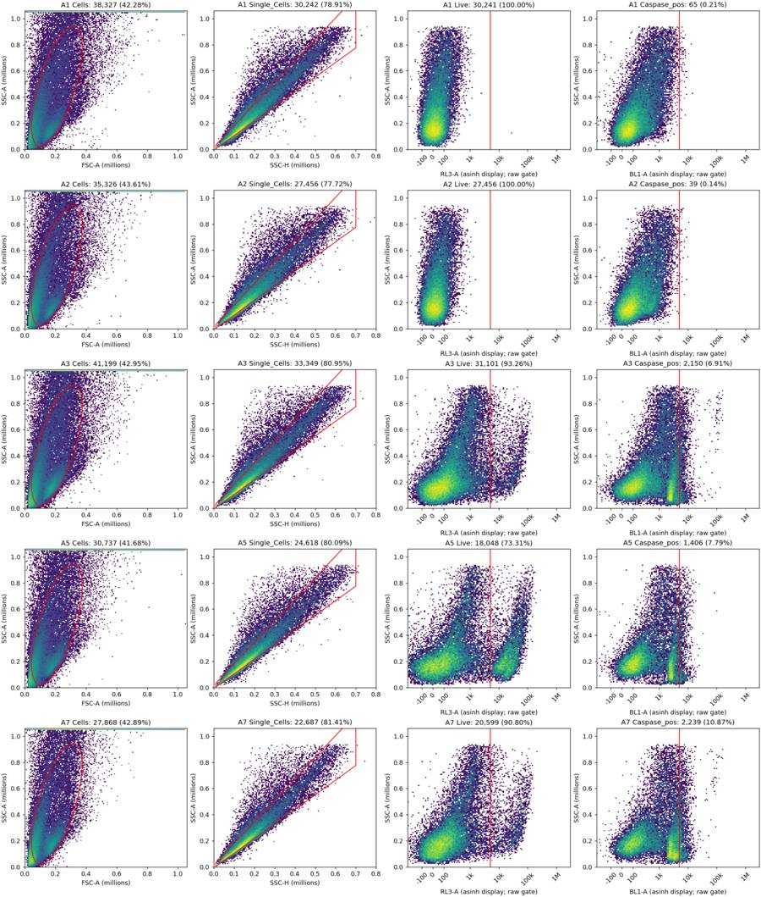
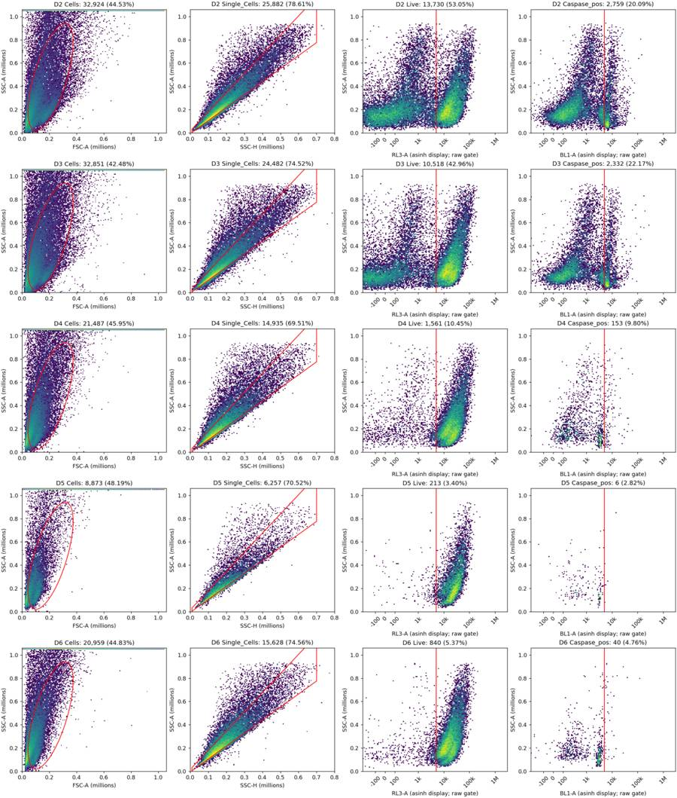
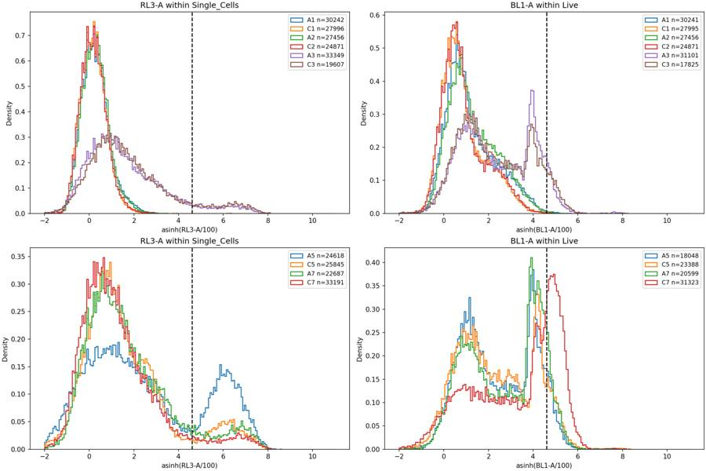
15
agent
The first shared gate set and counts are saved. Four controls need closer scrutiny: A2/C2 look like unstained samples despite their Zombie-only labels, while A3/C3 contain a distinct NIR-bright population despite their caspase-only labels. I’m quantifying those mismatches and checking the wells with few live cells or irregular flow.
tool call · exec
text(await tools.apply_patch("*** Begin Patch\n*** Add File: /task/outputs/inspect_time.py\n+\"\"\"Full-event, time-resolved acquisition checks against the saved gates.\"\"\"\n+from pathlib import Path\n+import numpy as np\n+import pandas as pd\n+import flowkit as fk\n+import matplotlib\n+matplotlib.use('Agg')\n+import matplotlib.pyplot as plt\n+from matplotlib.colors import LogNorm\n+from scipy.ndimage import median_filter\n+\n+OUT=Path('/task/outputs')\n+layout=pd.read_csv('/task/inputs/plate_layout.csv')\n+gs=fk.parse_gating_xml(str(OUT/'gates.xml'))\n+metrics=[]\n+all_bins=[]\n+all_gaps=[]\n+for row in layout.itertuples(index=False):\n+ s=fk.Sample(Path('/task/inputs/raw')/row.file)\n+ e=s.get_events(source='raw',subsample=False)\n+ d={c:e[:,s.get_channel_index(c)] for c in s.pnn_labels}\n+ t=d['Time'];tmax=t.max()\n+ result=gs.gate_sample(s)\n+ m={p:result.get_gate_membership(p) for p in ['Cells','Single_Cells','Live','Caspase_pos']}\n+ m['all_events']=np.ones(len(t),bool)\n+ edges=np.arange(0,np.ceil(tmax*4)/4+.25001,.25)\n+ mids=(edges[:-1]+edges[1:])/2\n+ series={p:np.histogram(t[mask],edges)[0]/.25 for p,mask in m.items()}\n+ core=(mids>=2)&(mids<=tmax-2)\n+ rolling=median_filter(series['all_events'],size=17,mode='nearest')\n+ rate_ratio=series['all_events']/np.maximum(rolling,1)\n+ r=dict(well=row.well,n=len(t),duration_s=tmax,\n+ baseline_rate_hz=np.median(series['all_events'][core]),\n+ interior_min_rate_hz=series['all_events'][core].min(),\n+ interior_max_rate_hz=series['all_events'][core].max(),\n+ low_rate_time_s=np.sum(core&(rate_ratio<.25))*.25,\n+ high_rate_time_s=np.sum(core&(rate_ratio>2.5))*.25)\n+ gaps=np.diff(t);idx=np.flatnonzero((gaps>=.05)&(t[:-1]>=2)&(t[1:]<=tmax-2))\n+ r['interior_gaps_ge_50ms']=len(idx)\n+ r['interior_total_gap_ge_50ms_s']=gaps[idx].sum()\n+ r['interior_max_gap_s']=gaps[(t[:-1]>=2)&(t[1:]<=tmax-2)].max()\n+ r['interior_largest_gap_at_s']=t[np.argmax(np.where((t[:-1]>=2)&(t[1:]<=tmax-2),gaps,-1))]\n+ for i in idx:\n+ all_gaps.append(dict(well=row.well,start_s=t[i],end_s=t[i+1],gap_s=gaps[i]))\n+ medians={}\n+ for c in ['FSC-A','SSC-A','BL1-A','RL3-A']:\n+ for pop in ['all_events','Single_Cells','Live']:\n+ vals=[]\n+ for lo,hi in zip(edges[:-1],edges[1:]):\n+ mask=(t>=lo)&(t<hi)&m[pop]\n+ vals.append(np.median(d[c][mask]) if mask.any() else np.nan)\n+ medians[c+'_'+pop]=np.array(vals)\n+ for i,mid in enumerate(mids):\n+ br=dict(well=row.well,start_s=edges[i],end_s=edges[i+1],rate_ratio=rate_ratio[i],core=core[i])\n+ br.update({p+'_rate_hz':a[i] for p,a in series.items()})\n+ br.update({key+'_median':a[i] for key,a in medians.items()})\n+ all_bins.append(br)\n+ metrics.append(r)\n+ fig,axes=plt.subplots(4,2,figsize=(15,13),constrained_layout=True)\n+ ax=axes[0,0]\n+ for pop,color in [('all_events','black'),('Cells','tab:orange'),('Single_Cells','tab:blue'),('Live','tab:green')]:\n+ ax.step(mids,series[pop],where='mid',lw=.8,label=pop,color=color)\n+ ax.set(ylabel='Events / s (0.25-s bins)',xlabel='Time (s)',title='Population event rates')\n+ ax.legend(fontsize=9)\n+ ax=axes[0,1]\n+ for c,color in [('FSC-A','tab:blue'),('SSC-A','tab:orange')]:\n+ ax.plot(mids,medians[c+'_all_events'],label=c+' all',color=color,lw=1)\n+ ax.plot(mids,medians[c+'_Single_Cells'],label=c+' singlets',color=color,lw=1,ls='--')\n+ ax.set(ylabel='Median scatter',xlabel='Time (s)',title='Scatter stability')\n+ ax.legend(fontsize=9)\n+ for ax,c in zip(axes[1],['FSC-A','SSC-A']):\n+ ax.hist2d(t,d[c],bins=[edges,np.linspace(0,1060000,150)],norm=LogNorm(vmin=1),cmap='viridis')\n+ ax.set(xlabel='Time (s)',ylabel=c,title='All events')\n+ for ax,c in zip(axes[2],['BL1-A','RL3-A']):\n+ ax.hist2d(t[m['Single_Cells']],np.arcsinh(d[c][m['Single_Cells']]/100),bins=[edges,np.linspace(-2,11,150)],norm=LogNorm(vmin=1),cmap='viridis')\n+ ax.set(xlabel='Time (s)',ylabel=f'asinh({c}/100)',title='Single_Cells')\n+ ax=axes[3,0]\n+ edges1=np.arange(0,np.ceil(tmax)+1.0001,1)\n+ ss=np.histogram(t[m['Single_Cells']],edges1)[0]\n+ live=np.histogram(t[m['Live']],edges1)[0]\n+ cp=np.histogram(t[m['Caspase_pos']],edges1)[0]\n+ ax.plot(edges1[:-1]+.5,100*live/np.maximum(ss,1),label='Live / Single_Cells')\n+ ax.plot(edges1[:-1]+.5,100*cp/np.maximum(live,1),label='Caspase_pos / Live')\n+ ax.set(xlabel='Time (s)',ylabel='Percent (1-s bins)',ylim=(0,100),title='Population stability')\n+ ax.legend(fontsize=9)\n+ ax=axes[3,1]\n+ ax.plot(t[1:],gaps*1000,lw=.5)\n+ ax.set(xlabel='Time (s)',ylabel='Inter-event gap (ms)',title='Acquisition gaps')\n+ fig.suptitle(f'{row.well}: {row.genotype}, {row.treatment}; n={len(t):,}',fontsize=14)\n+ fig.savefig(OUT/'plots'/f'time_{row.well}.png',dpi=120)\n+ plt.close(fig)\n+pd.DataFrame(metrics).to_csv(OUT/'qc_time_metrics.csv',index=False)\n+pd.DataFrame(all_bins).to_csv(OUT/'qc_time_025s.csv',index=False)\n+pd.DataFrame(all_gaps).to_csv(OUT/'qc_gaps.csv',index=False)\n+print(pd.DataFrame(metrics).round(3).to_string(index=False))\n*** End Patch"));
text(await tools.exec_command({cmd:"python /task/outputs/inspect_time.py",yield_time_ms:1000,max_output_tokens:5000}));
tool output
Script completed
Wall time 1.2 seconds
Output:
{}
{"chunk_id":"3b9c84","wall_time_seconds":1.001146824,"session_id":77920,"original_token_count":0,"output":""}tool call · exec
text(await tools.exec_command({cmd:"ls -lh /task/outputs/plots/time_*.png",max_output_tokens:1500}));
text(await tools.clock__curr_time({}));
text(await tools.exec_command({cmd:"python - <<'PY'\nimport flowkit as fk,numpy as np,pandas as pd\ns=fk.parse_gating_xml('/task/outputs/gates.xml')\nfor w in ['A1','C1','A2','C2','A3','C3']:\n x=fk.Sample(f'/task/inputs/raw/Caspase_primaryneurons_caspase_Group_{w}.fcs')\n d=x.get_events(source='raw',subsample=False);r=s.gate_sample(x)\n sing=r.get_gate_membership('Single_Cells');live=r.get_gate_membership('Live')\n a=d[:,x.get_channel_index('BL1-A')];b=d[:,x.get_channel_index('RL3-A')]\n print(w,'live',live.sum(),'BL thresholds',[(cut,round(100*np.mean(a[live]>=cut),4)) for cut in [2000,2500,3000,3500,4000,5000]],'RL3 thresholds',[(cut,int(np.sum(b[sing]>=cut))) for cut in [1000,2000,3000,5000,10000,20000]])\nPY",max_output_tokens:2500}))
tool output
Script completed
Wall time 1.1 seconds
Output:
{"chunk_id":"187ec4","wall_time_seconds":0.000003155,"exit_code":0,"original_token_count":366,"output":"-rw-r--r-- 1 root root 355K Nov 10 17:12 /task/outputs/plots/time_A1.png\n-rw-r--r-- 1 root root 365K Nov 10 17:12 /task/outputs/plots/time_A10.png\n-rw-r--r-- 1 root root 352K Nov 10 17:12 /task/outputs/plots/time_A11.png\n-rw-r--r-- 1 root root 344K Nov 10 17:12 /task/outputs/plots/time_A2.png\n-rw-r--r-- 1 root root 370K Nov 10 17:12 /task/outputs/plots/time_A3.png\n-rw-r--r-- 1 root root 367K Nov 10 17:12 /task/outputs/plots/time_A5.png\n-rw-r--r-- 1 root root 351K Nov 10 17:12 /task/outputs/plots/time_A7.png\n-rw-r--r-- 1 root root 345K Nov 10 17:12 /task/outputs/plots/time_A8.png\n-rw-r--r-- 1 root root 373K Nov 10 17:12 /task/outputs/plots/time_A9.png\n-rw-r--r-- 1 root root 349K Nov 10 17:13 /task/outputs/plots/time_B1.png\n-rw-r--r-- 1 root root 381K Nov 10 17:13 /task/outputs/plots/time_B2.png\n-rw-r--r-- 1 root root 343K Nov 10 17:13 /task/outputs/plots/time_B3.png\n-rw-r--r-- 1 root root 337K Nov 10 17:13 /task/outputs/plots/time_B4.png\n-rw-r--r-- 1 root root 308K Nov 10 17:13 /task/outputs/plots/time_B5.png\n-rw-r--r-- 1 root root 328K Nov 10 17:13 /task/outputs/plots/time_B6.png\n-rw-r--r-- 1 root root 344K Nov 10 17:13 /task/outputs/plots/time_C1.png\n-rw-r--r-- 1 root root 337K Nov 10 17:13 /task/outputs/plots/time_C2.png\n-rw-r--r-- 1 root root 368K Nov 10 17:13 /task/outputs/plots/time_C3.png\n-rw-r--r-- 1 root root 386K Nov 10 17:13 /task/outputs/plots/time_C5.png\n-rw-r--r-- 1 root root 381K Nov 10 17:13 /task/outputs/plots/time_C7.png\n"}
{"current_time":"2026-11-10 17:13:11 UTC"}
{"chunk_id":"b626a9","wall_time_seconds":0.884936292,"exit_code":0,"original_token_count":324,"output":"A1 live 30241 BL thresholds [(2000, 2.7876), (2500, 1.6931), (3000, 0.9623), (3500, 0.6217), (4000, 0.4299), (5000, 0.2149)] RL3 thresholds [(1000, 12), (2000, 2), (3000, 1), (5000, 1), (10000, 1), (20000, 1)]\nC1 live 27995 BL thresholds [(2000, 0.6037), (2500, 0.3358), (3000, 0.1893), (3500, 0.1107), (4000, 0.0679), (5000, 0.0286)] RL3 thresholds [(1000, 6), (2000, 2), (3000, 1), (5000, 1), (10000, 1), (20000, 1)]\nA2 live 27456 BL thresholds [(2000, 2.3711), (2500, 1.3294), (3000, 0.7612), (3500, 0.4334), (4000, 0.3132), (5000, 0.142)] RL3 thresholds [(1000, 6), (2000, 0), (3000, 0), (5000, 0), (10000, 0), (20000, 0)]\nC2 live 24871 BL thresholds [(2000, 0.7157), (2500, 0.39), (3000, 0.2332), (3500, 0.1447), (4000, 0.0764), (5000, 0.0241)] RL3 thresholds [(1000, 0), (2000, 0), (3000, 0), (5000, 0), (10000, 0), (20000, 0)]\nA3 live 31101 BL thresholds [(2000, 29.7289), (2500, 23.3915), (3000, 17.0252), (3500, 13.3951), (4000, 10.7906), (5000, 6.913)] RL3 thresholds [(1000, 6039), (2000, 3809), (3000, 2970), (5000, 2248), (10000, 1651), (20000, 1159)]\nC3 live 17825 BL thresholds [(2000, 25.2511), (2500, 20.2412), (3000, 15.8597), (3500, 13.2118), (4000, 10.9958), (5000, 7.8373)] RL3 thresholds [(1000, 3921), (2000, 2695), (3000, 2232), (5000, 1782), (10000, 1359), (20000, 980)]\n"}tool call · exec
for (const path of ["/task/outputs/plots/time_B1.png","/task/outputs/plots/time_C1.png","/task/outputs/plots/time_B6.png"]) {const r=await tools.view_image({path});image(r.image_url);}
text(await tools.write_stdin({session_id:77920,chars:"",yield_time_ms:1000,max_output_tokens:5500}));
tool output
Script completed Wall time 0.1 seconds Output:
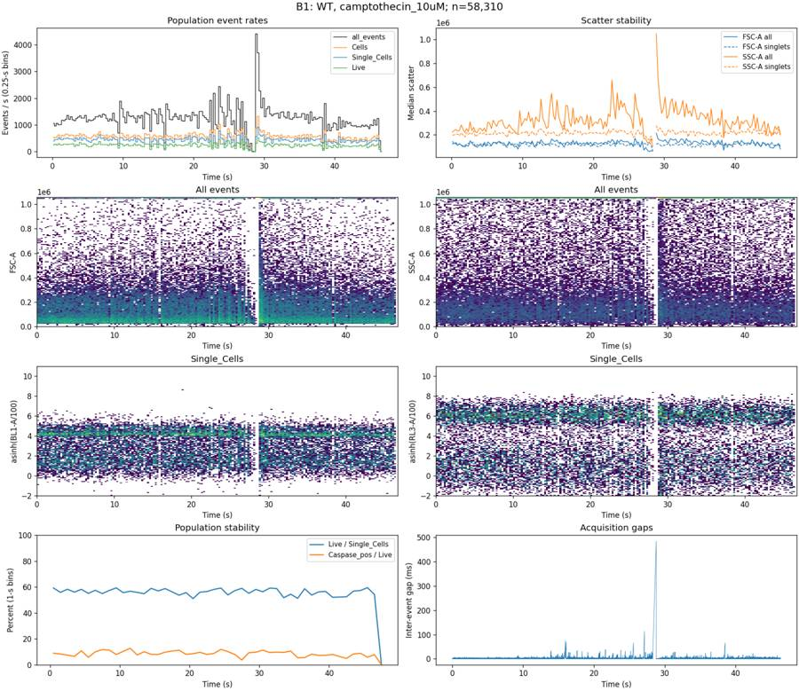
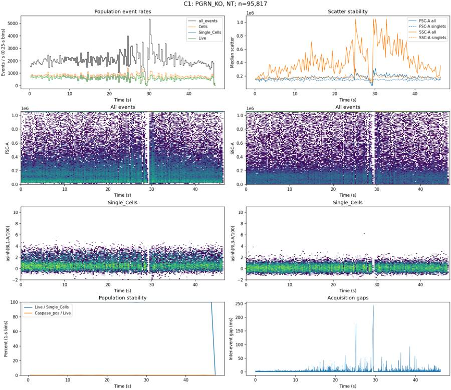
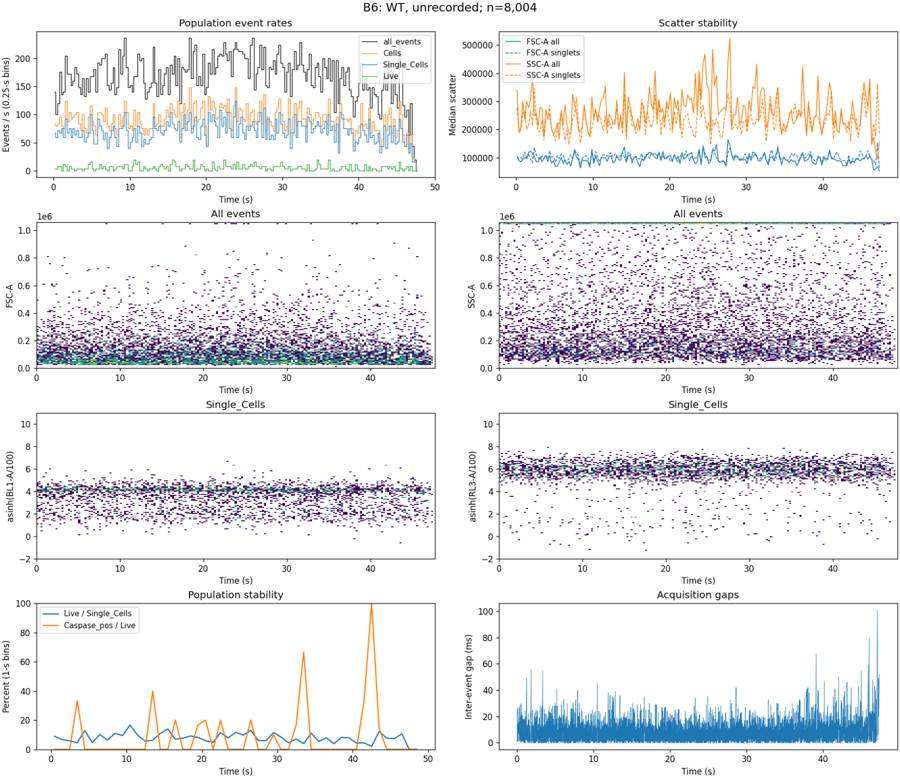
{"chunk_id":"3bb11a","wall_time_seconds":0.000002794,"exit_code":0,"original_token_count":1713,"output":"well n duration_s baseline_rate_hz interior_min_rate_hz interior_max_rate_hz low_rate_time_s high_rate_time_s interior_gaps_ge_50ms interior_total_gap_ge_50ms_s interior_max_gap_s interior_largest_gap_at_s\n A1 90651 47.477 1924.0 772.0 3448.0 0.00 0.00 2 0.139 0.088 29.579\n A2 81008 46.251 1728.0 404.0 3332.0 0.25 0.00 4 0.274 0.081 15.382\n A3 95933 47.097 2064.0 1416.0 2836.0 0.00 0.00 0 0.000 0.023 44.922\n A5 73753 46.300 1616.0 640.0 2448.0 0.00 0.00 4 0.238 0.073 26.996\n A7 64975 46.240 1452.0 912.0 1944.0 0.00 0.00 0 0.000 0.016 13.365\n A8 60216 47.272 1300.0 812.0 2140.0 0.00 0.00 0 0.000 0.031 36.945\n A9 80278 46.415 1750.0 1240.0 2696.0 0.00 0.00 0 0.000 0.045 16.950\n A10 64936 47.212 1408.0 708.0 2280.0 0.00 0.00 2 0.161 0.108 23.682\n A11 68296 46.350 1488.0 84.0 3064.0 0.50 0.00 1 0.182 0.182 25.961\n B1 58310 46.332 1284.0 0.0 4408.0 1.25 0.50 6 0.875 0.485 28.314\n B2 51930 47.158 1104.0 348.0 1812.0 0.00 0.00 5 0.395 0.128 22.482\n B3 13995 47.219 308.0 168.0 432.0 0.00 0.00 1 0.072 0.072 19.537\n B4 58782 46.176 1276.0 48.0 2860.0 0.25 0.00 5 0.521 0.249 27.665\n B5 33754 46.309 736.0 4.0 1668.0 0.50 0.00 4 0.561 0.317 27.534\n B6 8004 47.385 172.0 92.0 236.0 0.00 0.00 3 0.178 0.068 39.051\n C1 95817 46.270 2044.0 4.0 5340.0 0.50 0.00 11 1.040 0.243 29.275\n C2 80166 47.368 1672.0 44.0 3772.0 0.25 0.00 8 0.787 0.257 27.583\n C3 68270 46.211 1488.0 324.0 2924.0 0.25 0.00 7 0.468 0.112 25.040\n C5 88646 47.356 1912.0 1300.0 3036.0 0.00 0.00 0 0.000 0.048 16.725\n C7 119052 47.419 2618.0 20.0 5996.0 0.25 0.00 9 0.651 0.104 23.579\n C8 52267 46.212 1140.0 672.0 1940.0 0.00 0.00 6 0.388 0.077 17.004\n C9 92282 47.372 2032.0 88.0 5068.0 0.75 0.25 9 0.673 0.140 23.129\n C10 88797 47.169 1896.0 4.0 5888.0 1.75 0.75 11 1.337 0.334 26.764\n C11 63651 46.431 1376.0 0.0 4208.0 2.50 0.50 9 1.162 0.359 21.153\n D1 97824 47.418 2130.0 20.0 4968.0 1.00 0.00 13 1.220 0.258 23.193\n D2 73937 47.285 1576.0 292.0 3312.0 0.25 0.00
… [989 more characters not shown]tool call · exec
text(await tools.apply_patch("*** Begin Patch\n*** Update File: /task/outputs/gate_plate.py\n@@\n-CASPASE_MIN = 5000.\n+CASPASE_MIN = 3000.\n*** End Patch"));
text(await tools.exec_command({cmd:"python /task/outputs/gate_plate.py",yield_time_ms:1000,max_output_tokens:5000}));
text(await tools.exec_command({cmd:"python - <<'PY'\nimport pandas as pd\nb=pd.read_csv('/task/outputs/qc_time_025s.csv')\nm=pd.read_csv('/task/outputs/qc_time_metrics.csv')\nfor w in ['A11','B1','C1','C9','C10','C11','D1','D3','D4','D5','D6']:\n x=b[(b.well==w)&b.core]\n low=x[x.rate_ratio<.25]\n print('\\n',w,'low-bin intervals',[(float(z.start_s),float(z.end_s),float(z.all_events_rate_hz),round(float(z.rate_ratio),3)) for z in low.itertuples()])\n hi=x.nlargest(3,'all_events_rate_hz')\n print('high-bin intervals',[(float(z.start_s),float(z.end_s),float(z.all_events_rate_hz),round(float(z.rate_ratio),3),float(z.SSC_A) if hasattr(z,'SSC_A') else '') for z in hi.itertuples()])\nPY",max_output_tokens:5000}));
tool output
Script completed
Wall time 1.5 seconds
Output:
{}
{"chunk_id":"ea569f","wall_time_seconds":1.001780646,"session_id":89076,"original_token_count":0,"output":""}
{"chunk_id":"7380ec","wall_time_seconds":0.144676435,"exit_code":0,"original_token_count":807,"output":"\n A11 low-bin intervals [(25.75, 26.0, 292.0, 0.162), (26.0, 26.25, 84.0, 0.047)]\nhigh-bin intervals [(26.25, 26.5, 3064.0, 1.702, ''), (26.5, 26.75, 3024.0, 1.714, ''), (28.25, 28.5, 2276.0, 1.264, '')]\n\n B1 low-bin intervals [(27.0, 27.25, 244.0, 0.239), (27.75, 28.0, 192.0, 0.171), (28.0, 28.25, 320.0, 0.245), (28.25, 28.5, 20.0, 0.015), (28.5, 28.75, 0.0, 0.0)]\nhigh-bin intervals [(28.75, 29.0, 4408.0, 3.122, ''), (29.0, 29.25, 3692.0, 2.747, ''), (23.5, 23.75, 2440.0, 1.9, '')]\n\n C1 low-bin intervals [(29.0, 29.25, 184.0, 0.073), (29.25, 29.5, 4.0, 0.002)]\nhigh-bin intervals [(30.0, 30.25, 5340.0, 2.259, ''), (30.25, 30.5, 4076.0, 1.623, ''), (24.5, 24.75, 3996.0, 1.671, '')]\n\n C9 low-bin intervals [(11.0, 11.25, 92.0, 0.047), (11.25, 11.5, 88.0, 0.044), (23.0, 23.25, 208.0, 0.092)]\nhigh-bin intervals [(11.75, 12.0, 5068.0, 2.64, ''), (11.5, 11.75, 4084.0, 2.079, ''), (9.25, 9.5, 3736.0, 2.157, '')]\n\n C10 low-bin intervals [(11.5, 11.75, 136.0, 0.07), (26.0, 26.25, 180.0, 0.091), (26.5, 26.75, 208.0, 0.118), (26.75, 27.0, 4.0, 0.002), (27.0, 27.25, 4.0, 0.002), (29.0, 29.25, 12.0, 0.005), (29.25, 29.5, 364.0, 0.153)]\nhigh-bin intervals [(27.25, 27.5, 5888.0, 3.671, ''), (29.75, 30.0, 5252.0, 2.753, ''), (27.5, 27.75, 4468.0, 3.069, '')]\n\n C11 low-bin intervals [(11.25, 11.5, 196.0, 0.138), (11.5, 11.75, 148.0, 0.105), (21.0, 21.25, 76.0, 0.085), (21.25, 21.5, 0.0, 0.0), (22.5, 22.75, 396.0, 0.23), (22.75, 23.0, 208.0, 0.121), (25.75, 26.0, 328.0, 0.2), (27.0, 27.25, 36.0, 0.022), (36.25, 36.5, 144.0, 0.123), (36.5, 36.75, 8.0, 0.007)]\nhigh-bin intervals [(21.75, 22.0, 4208.0, 4.717, ''), (23.25, 23.5, 3976.0, 2.312, ''), (11.75, 12.0, 3436.0, 2.468, '')]\n\n D1 low-bin intervals [(23.0, 23.25, 96.0, 0.048), (24.5, 24.75, 192.0, 0.096), (24.75, 25.0, 20.0, 0.01), (30.25, 30.5, 344.0, 0.161)]\nhigh-bin intervals [(25.0, 25.25, 4968.0, 2.375, ''), (29.5, 29.75, 3960.0, 1.85, ''), (25.25, 25.5, 3668.0, 1.632, '')]\n\n D3 low-bin intervals [(14.0, 14.25, 308.0, 0.217), (16.75, 17.0, 12.0, 0.013), (17.0, 17.25, 88.0, 0.097), (18.0, 18.25, 152.0, 0.168), (18.25, 18.5, 60.0, 0.066), (18.5, 18.75, 280.0, 0.213), (23.0, 23.25, 20.0, 0.011), (25.5, 25.75, 328.0, 0.169), (28.5, 28.75, 332.0, 0.189), (28.75, 29.0, 12.0, 0.007), (32.75, 33.0, 24.0, 0.014), (37.75, 38.0, 344.0, 0.213), (43.0, 43.25, 8.0, 0.006)]\nhigh-bin intervals [(29.25, 29.5, 5432.0, 3.509, ''), (19.25, 19.5, 5360.0, 2.577, ''), (19.5, 19.75, 4816.0, 2.342, '')]\n\n D4 low-bin intervals [(27.5, 27.75, 152.0, 0.162), (32.5, 32.75, 32.0, 0.029), (32.75, 33.0, 20.0, 0.018)]\nhigh-bin intervals [(33.25, 33.5, 3132.0, 3.095, ''), (33.5, 33.75, 2444.0, 2.246, ''), (30.75, 31.0, 2176.0, 3.091, '')]\n\n D5 low-bin intervals [(18.0, 18.25, 32.0, 0.073), (18.25, 18.5, 4.0, 0.009), (19.5, 19.75, 100.0, 0.229), (24.25, 24.5, 48.0, 0.124), (25.75, 26.0, 4.0, 0.01), (27.5, 27.75, 80.0, 0.206)]\nhigh-bin intervals [(18.5, 18.75, 1056.0, 2.467, ''), (26.5, 26.75, 920.0, 2.054, ''), (18.75, 19.0, 844.0, 1.972, '')]\n\n D6 low-bin intervals [(33.0, 33.25, 8.0, 0.01), (33.25, 33.5, 32.0, 0.03), (33.5, 33.75, 0.0, 0.0)]\nhigh-bin intervals [(24.75, 25.0, 2568.0, 2.548, ''), (33.75, 34.0, 2360.0, 2.077, ''), (31.25, 31.5, 2260.0, 5.825, '')]\n"}tool call · exec
for (const path of ["/task/outputs/plots/time_C10.png","/task/outputs/plots/time_C11.png","/task/outputs/plots/time_D3.png"]) {const r=await tools.view_image({path});image(r.image_url);}
tool output
Script completed Wall time 0.1 seconds Output:
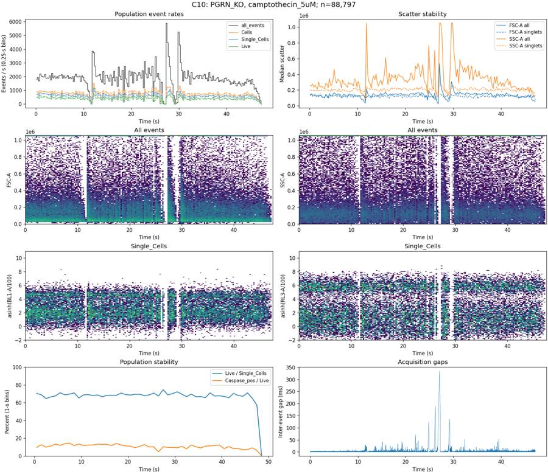
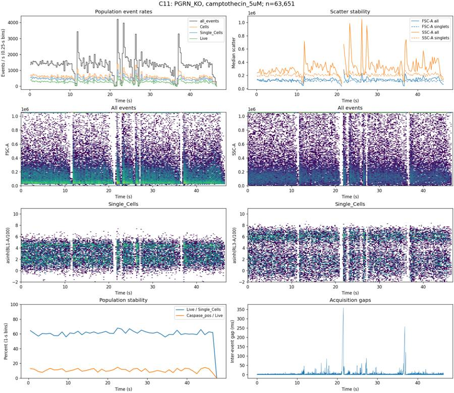
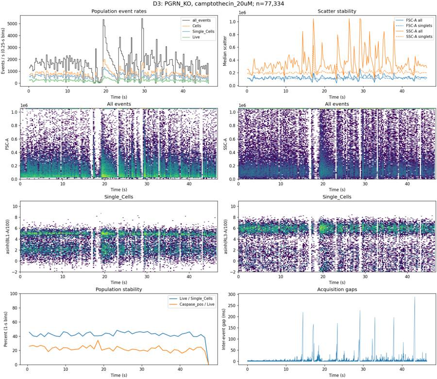
tool call · exec
text(await tools.write_stdin({session_id:89076,chars:"",yield_time_ms:1000,max_output_tokens:4000}));
text(await tools.exec_command({cmd:"python /task/outputs/inspect_time.py",yield_time_ms:1000,max_output_tokens:1000}));
text(await tools.apply_patch("*** Begin Patch\n*** Add File: /task/outputs/finalize_qc.py\n+\"\"\"Write explicit per-well QC decisions and validate the requested deliverables.\n+\n+QC is for downstream comparisons of Caspase_pos among Live. The minimum live\n+denominator and flow-instability thresholds are analyst-defined, not instrument\n+specifications. This script never changes the event gates or removes events.\n+\"\"\"\n+from pathlib import Path\n+import json\n+import numpy as np\n+import pandas as pd\n+import flowkit as fk\n+\n+OUT=Path('/task/outputs')\n+layout=pd.read_csv('/task/inputs/plate_layout.csv')\n+counts=pd.read_csv(OUT/'counts.csv')\n+gated=pd.read_csv(OUT/'qc_gated_metrics.csv').set_index('well')\n+time=pd.read_csv(OUT/'qc_time_metrics.csv').set_index('well')\n+bins=pd.read_csv(OUT/'qc_time_025s.csv')\n+initial=pd.read_csv(OUT/'qc_initial_metrics.csv').set_index('well')\n+MIN_LIVE=1000\n+MIN_LOW_FLOW_SECONDS=1.0\n+\n+def flow_evidence(well):\n+ r=time.loc[well]\n+ b=bins[(bins.well==well)&bins.core]\n+ low=b[b.rate_ratio<.25]\n+ worst=b.loc[b.all_events_rate_hz.idxmin()]\n+ peak=b.loc[b.all_events_rate_hz.idxmax()]\n+ return (f\"Time core=2.00-{r.duration_s-2:.3f} s; median rate={r.baseline_rate_hz:.0f}/s; \"\n+ f\"{r.low_rate_time_s:.2f} s cumulatively below 25% of local 4.25-s median \"\n+ f\"({len(low)} bins of 0.25 s); minimum {worst.all_events_rate_hz:.0f}/s at \"\n+ f\"{worst.start_s:.2f}-{worst.end_s:.2f} s; maximum {peak.all_events_rate_hz:.0f}/s \"\n+ f\"at {peak.start_s:.2f}-{peak.end_s:.2f} s; largest interior inter-event gap \"\n+ f\"{r.interior_max_gap_s:.3f} s at {r.interior_largest_gap_at_s:.3f}-\"\n+ f\"{r.interior_largest_gap_at_s+r.interior_max_gap_s:.3f} s\")\n+\n+flags=[]\n+for row in layout.itertuples(index=False):\n+ w=row.well;g=gated.loc[w];t=time.loc[w];a=initial.loc[w]\n+ n=int(g.all_events);live=int(g.Live);sing=int(g.Single_Cells);cp=int(g.Caspase_pos)\n+ category='ok';usable='yes'\n+ evidence=(f\"N={n}; Cells={int(g.Cells)}; Single_Cells={sing}; Live={live}; \"\n+ f\"Caspase_pos={cp}; acquisition={t.duration_s:.3f} s; \"\n+ f\"interior low-flow time={t.low_rate_time_s:.2f} s (<1.00-s exclusion threshold); \"\n+ f\"raw SSC-A at 1048575={a['SSC-A_pct_max']:.2f}%, Cells SSC-A at maximum=0.00%\")\n+ if w in ['A2','C2']:\n+ reference='A1' if w=='A2' else 'C1'\n+ rg=gated.loc[reference]\n+ usable='no';category='bad_control'\n+ evidence=(f\"Declared Zombie-only control lacks a detectable Zombie-bright population: \"\n+ f\"0/{sing} Single_Cells have RL3-A >=5000; RL3-A median=\"\n+ f\"{g['Single_Cells_RL3-A_q0.5']:.0f}, 99th percentile=\"\n+ f\"{g['Single_Cells_RL3-A_q0.99']:.1f}, versus unstained {reference} \"\n+ f\"median={rg['Single_Cells_RL3-A_q0.5']:.0f}, 99th=\"\n+ f\"{rg['Single_Cells_RL3-A_q0.99']:.1f}; BL1-A >=3000 in \"\n+ f\"{cp}/{live} Live ({100*cp/live:.3f}%). Staining/control identity is unverified; \"\n+ f\"missing stain is suspected, not proven. N={n}; confidence=medium\")\n+ elif w in ['A3','C3']:\n+ reference='A1' if w=='A3' else 'C1'\n+ rg=gated.loc[reference]\n+ bright=sing-live\n+ usable='no';category='bad_control'\n+ evidence=(f\"Declared caspase-only/Zombie-negative control contains a separate NIR-bright \"\n+ f\"population: {bright}/{sing} Single_Cells have RL3-A >=5000 \"\n+ f\"({100*bright/sing:.3f}%); RL3-A 99th percentile=\"\n+ f\"{g['Single_Cells_RL3-A_q0.99']:.1f} versus unstained {reference} \"\n+ f\"{rg['Single_Cells_RL3-A_q0.99']:.1f}; {reference} has \"\n+ f\"{int(rg.Single_Cells-rg.Live)}/{int(rg.Single_Cells)} above 5000. \"\n+ f\"Inconsistent with the assigned negative-control role; actual stain/identity \"\n+ f\"cannot be resolved. N={n}; confidence=high\")\n+ elif live<MIN_LIVE:\n+ usable='no';category='too_few_events'\n+ evidence=(f\"N={n}; Cells={int(g.Cells)}; Single_Cells={sing}; Live={live} \"\n+ f\"({100*live/sing:.3f}% of Single_Cells), below the prespecified-for-reporting \"\n+ f\"minimum of {MIN_LIVE} Live for caspase comparisons; Caspase_pos={cp}. \"\n+ f\"Low viable denominator, not inferred drying. {flow_evidence(w)}; confidence=high\")\n+ elif t.low_rate_time_s>=MIN_LOW_FLOW_SECONDS:\n+ usable='no';category='clog_or_interrupted_flow'\n+ evidence=(f\"N={n}; Live={live}. Recurrent rate collapses and recovery bursts with \"\n+ f\"scatter discontinuities in the full-event time plots. {flow_evidence(w)}; \"\n+ f\"meets the >=1.00-s cumulative near-stop exclusion rule; \"\n+ f\"interrupted flow is observed, physical cause is unconfirmed; confidence=high\")\n+ flags.append(dict(file=row.file,well=w,usable=usable,reason_category=category,evidence=evidence))\n+flags=pd.DataFrame(flags)\n+flags.to_csv(OUT/'flags.csv',index=False)\n+\n+notes=\"\"\"## Gates\n+\n+FlowKit 1.2.3; one unchanged hierarchy on all 30 full event sets: `Cells → Single_Cells → Live → Caspase_pos`. Every dimension uses its detector ID and `uncompensated`; no compensation, time filtering, or subsampling. Gates use raw units; fluorescence plots use asinh display only. BL1-A is CellEvent, despite the stale GFP label.\n+\n+- **Cells:** FSC-A × SSC-A ellipsoid centered at (210000, 480000), projection radii (165000, 460000), correlation 0.65, squared Ma
… [5,831 more characters not shown]tool output
Script completed
Wall time 1.2 seconds
Output:
{"chunk_id":"d7d4f1","wall_time_seconds":0.000002954,"exit_code":0,"original_token_count":442,"output":"well all_events Cells Single_Cells Live Caspase_pos\n A1 90651 38327 30242 30241 291\n A2 81008 35326 27456 27456 209\n A3 95933 41199 33349 31101 5295\n A5 73753 30737 24618 18048 3331\n A7 64975 27868 22687 20599 5577\n A8 60216 24858 20449 18064 5065\n A9 80278 36631 30098 26517 7657\n A10 64936 29266 23426 15729 3106\n A11 68296 29570 23910 17372 3920\n B1 58310 25564 20140 11330 2620\n B2 51930 23084 18625 9832 1242\n B3 13995 7364 5688 1270 333\n B4 58782 27477 21872 8845 1692\n B5 33754 15242 10928 350 53\n B6 8004 4352 3378 274 78\n C1 95817 34838 27996 27995 53\n C2 80166 30310 24871 24871 58\n C3 68270 24517 19607 17825 2827\n C5 88646 31819 25845 23388 5046\n C7 119052 44890 33191 31323 14661\n C8 52267 18724 15316 13336 2847\n C9 92282 33654 26289 23813 6546\n C10 88797 34589 27160 18631 3965\n C11 63651 25913 20236 12412 2878\n D1 97824 41710 32238 14771 3737\n D2 73937 32924 25882 13730 3846\n D3 77334 32851 24482 10518 3144\n D4 46763 21487 14935 1561 425\n D5 18412 8873 6257 213 67\n D6 46753 20959 15628 840 276\n"}
{"chunk_id":"60576f","wall_time_seconds":1.001569919,"session_id":5827,"original_token_count":0,"output":""}
{}21
agent
The fluorescence boundaries are now set: RL3-A <5,000 for Live and BL1-A ≥3,000 for Caspase_pos. The caspase cutoff leaves under 1% positive events in each negative reference. The current QC rules exclude 13 wells: four suspect controls, four with fewer than 1,000 live events, and five with repeated flow interruptions. All 30 wells remain in the counts export.
tool call · exec
text(await tools.exec_command({cmd:"python /task/outputs/finalize_qc.py",yield_time_ms:1000,max_output_tokens:4000}));
text(await tools.clock__curr_time({}));
for (const path of ["/task/outputs/plots/gates_2.png","/task/outputs/plots/gates_3.png"]) {const r=await tools.view_image({path});image(r.image_url);}
tool output
Script completed Wall time 1.3 seconds Output:
{"chunk_id":"37021d","wall_time_seconds":1.000986705,"session_id":38877,"original_token_count":71,"output":"/task/outputs/finalize_qc.py:121: UserWarning: This pattern is interpreted as a regular expression, and has match groups. To actually get the groups, use str.extract.\n assert flags.loc[flags.usable.eq('no'),'evidence'].str.contains(r'confidence=(high|medium|low)',regex=True).all()\n"}{"current_time":"2026-11-10 17:16:43 UTC"}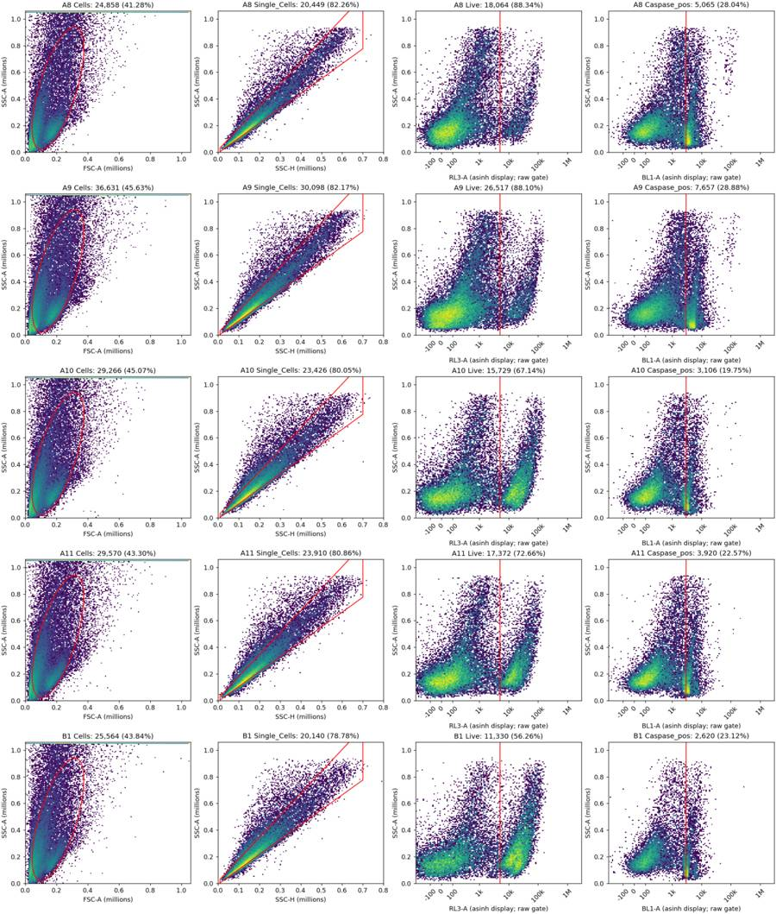
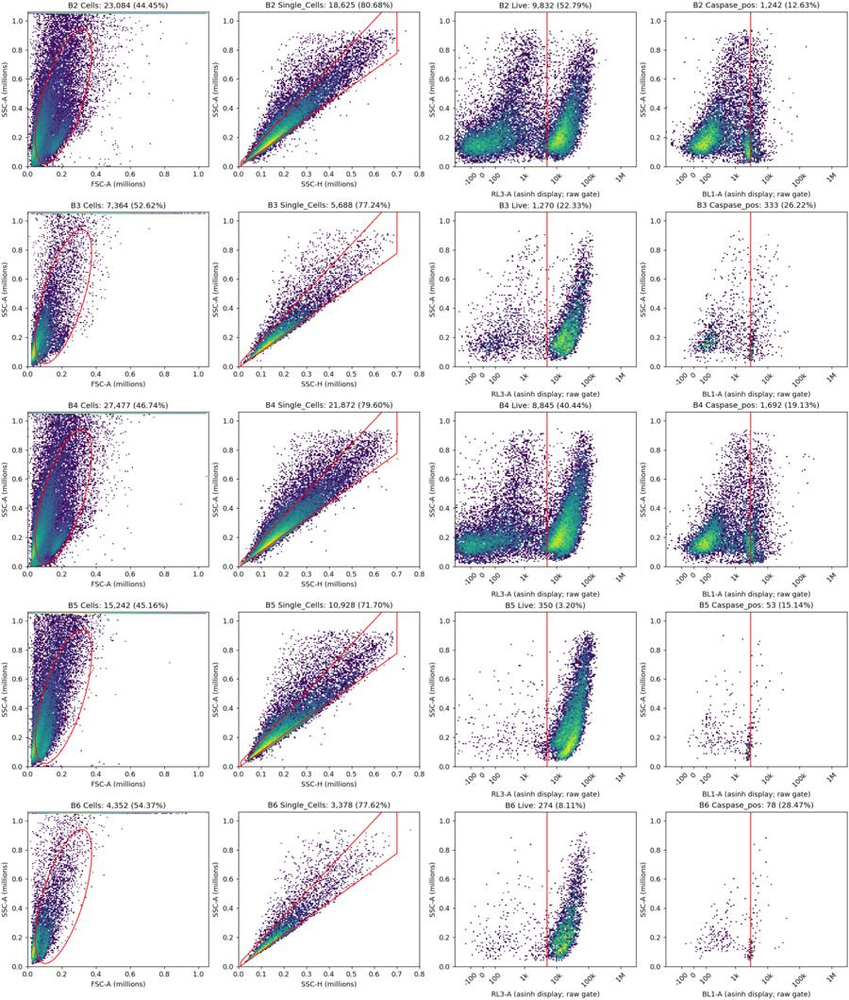
tool call · exec
const rr=await Promise.allSettled([
tools.write_stdin({session_id:38877,chars:"",yield_time_ms:1000,max_output_tokens:4000}),
tools.write_stdin({session_id:5827,chars:"",yield_time_ms:1000,max_output_tokens:2500}),
tools.exec_command({cmd:"wc -w /task/outputs/notes.md\nhead -30 /task/outputs/gates.xml\nhead -5 /task/outputs/counts.csv\npython - <<'PY'\nimport pandas as pd\nm=pd.read_csv('/task/outputs/qc_gated_metrics.csv')\nprint('Max clipping in gated populations:')\nfor c in ['Cells_FSC-A_pct_max','Cells_SSC-A_pct_max','Single_Cells_SSC-H_pct_max','Live_BL1-A_pct_max','Single_Cells_RL3-A_pct_max']:\n print(c,m[c].max(), m.loc[m[c].idxmax(),'well'])\nPY",max_output_tokens:2500})
]);rr.forEach(text)
for (const path of ["/task/outputs/plots/gates_4.png","/task/outputs/plots/gates_5.png"]) {const r=await tools.view_image({path});image(r.image_url);}
tool output
Script completed Wall time 5.1 seconds Output:
{"status":"fulfilled","value":{"chunk_id":"e0ec0e","wall_time_seconds":0.000002884,"exit_code":0,"original_token_count":362,"output":"well usable reason_category\n A1 yes ok\n A2 no bad_control\n A3 no bad_control\n A5 yes ok\n A7 yes ok\n A8 yes ok\n A9 yes ok\n A10 yes ok\n A11 yes ok\n B1 no clog_or_interrupted_flow\n B2 yes ok\n B3 yes ok\n B4 yes ok\n B5 no too_few_events\n B6 no too_few_events\n C1 yes ok\n C2 no bad_control\n C3 no bad_control\n C5 yes ok\n C7 yes ok\n C8 yes ok\n C9 yes ok\n C10 no clog_or_interrupted_flow\n C11 no clog_or_interrupted_flow\n D1 no clog_or_interrupted_flow\n D2 yes ok\n D3 no clog_or_interrupted_flow\n D4 yes ok\n D5 no too_few_events\n D6 no too_few_events\n{\n \"flowkit_version\": \"1.2.3\",\n \"samples\": 30,\n \"count_rows\": 120,\n \"flag_rows\": 30,\n \"usable_wells\": 17,\n \"excluded_wells\": 13,\n \"gates\": 4,\n \"uncompensated\": true,\n \"full_events\": true,\n \"xml_reloaded\": true,\n \"all_exported_counts_match_reloaded_gates\": true,\n \"notes_word_count\": 480\n}\n"}}{"status":"fulfilled","value":{"chunk_id":"cb7235","wall_time_seconds":5.00099519,"session_id":5827,"original_token_count":0,"output":""}}{"status":"fulfilled","value":{"chunk_id":"153919","wall_time_seconds":0.104810883,"exit_code":0,"original_token_count":522,"output":"480 /task/outputs/notes.md\n<?xml version='1.0' encoding='UTF-8'?>\n<gating:Gating-ML xmlns:gating=\"http://www.isac-net.org/std/Gating-ML/v2.0/gating\" xmlns:data-type=\"http://www.isac-net.org/std/Gating-ML/v2.0/datatypes\" xmlns:transforms=\"http://www.isac-net.org/std/Gating-ML/v2.0/transformations\">\n <gating:EllipsoidGate gating:id=\"Cells\">\n <gating:dimension gating:compensation-ref=\"uncompensated\">\n <data-type:fcs-dimension data-type:name=\"FSC-A\"/>\n </gating:dimension>\n <gating:dimension gating:compensation-ref=\"uncompensated\">\n <data-type:fcs-dimension data-type:name=\"SSC-A\"/>\n </gating:dimension>\n <gating:mean>\n <gating:coordinate data-type:value=\"210000.0\"/>\n <gating:coordinate data-type:value=\"480000.0\"/>\n </gating:mean>\n <gating:covarianceMatrix>\n <gating:row>\n <gating:entry data-type:value=\"27225000000.0\"/>\n <gating:entry data-type:value=\"49335000000.0\"/>\n </gating:row>\n <gating:row>\n <gating:entry data-type:value=\"49335000000.0\"/>\n <gating:entry data-type:value=\"211600000000.0\"/>\n </gating:row>\n </gating:covarianceMatrix>\n <gating:distanceSquare data-type:value=\"1.0\"/>\n </gating:EllipsoidGate>\n <gating:PolygonGate gating:id=\"Single_Cells\" gating:parent_id=\"Cells\">\n <gating:dimension gating:compensation-ref=\"uncompensated\">\n <data-type:fcs-dimension data-type:name=\"SSC-H\"/>\n </gating:dimension>\n <gating:dimension gating:compensation-ref=\"uncompensated\">\nfile,well,population,count,parent_population,pct_of_parent\nCaspase_primaryneurons_caspase_Group_A1.fcs,A1,Cells,38327,all_events,42.27973215960111\nCaspase_primaryneurons_caspase_Group_A1.fcs,A1,Single_Cells,30242,Cells,78.9052104260704\nCaspase_primaryneurons_caspase_Group_A1.fcs,A1,Live,30241,Single_Cells,99.99669334038754\nCaspase_primaryneurons_caspase_Group_A1.fcs,A1,Caspase_pos,291,Live,0.9622697662114348\nMax clipping in gated populations:\nCells_FSC-A_pct_max 0.0 A1\nCells_SSC-A_pct_max 0.0 A1\nSingle_Cells_SSC-H_pct_max 0.0 A1\nLive_BL1-A_pct_max 0.0 A1\nSingle_Cells_RL3-A_pct_max 0.0 A1\n"}}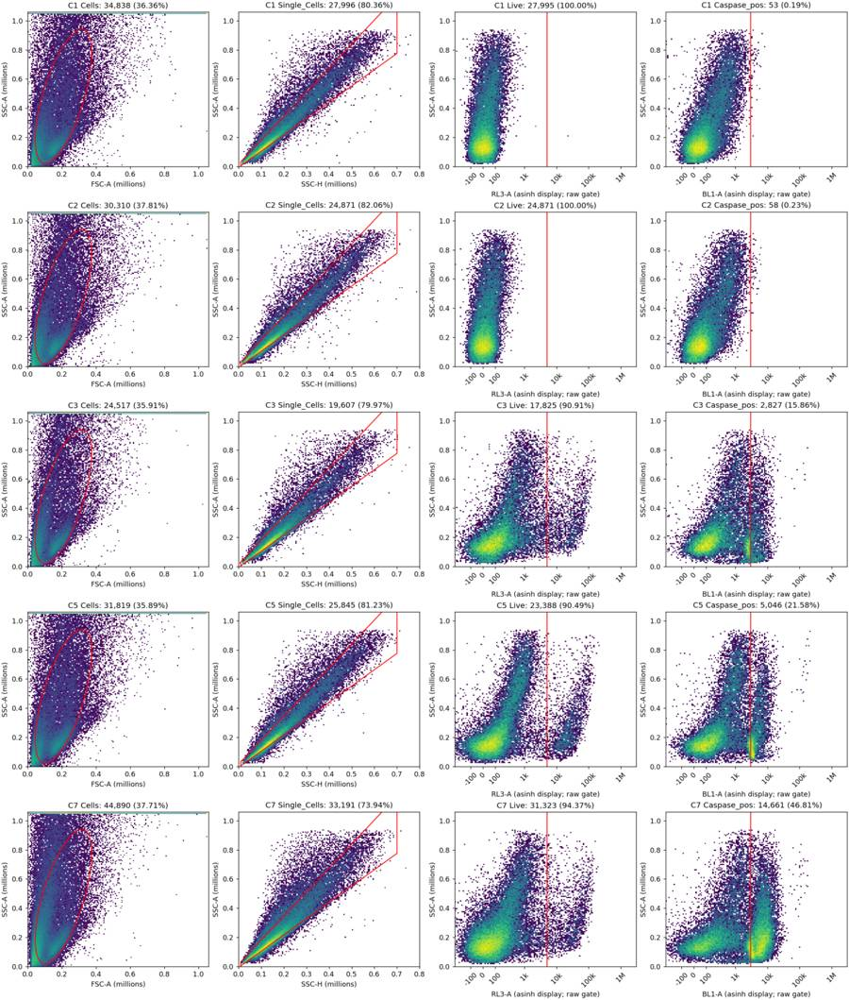
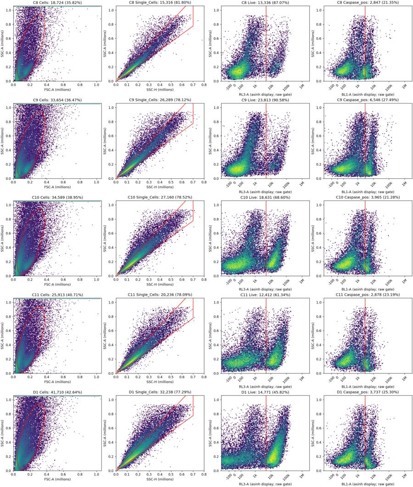
tool call · exec
text(await tools.write_stdin({session_id:5827,chars:"",yield_time_ms:1000,max_output_tokens:2500}));
text(await tools.apply_patch("*** Begin Patch\n*** Update File: /task/outputs/finalize_qc.py\n@@\n- f\"({100*live/sing:.3f}% of Single_Cells), below the prespecified-for-reporting \"\n+ f\"({100*live/sing:.3f}% of Single_Cells), below the analyst-defined \"\n@@\n-assert flags.loc[flags.usable.eq('no'),'evidence'].str.contains(r'confidence=(high|medium|low)',regex=True).all()\n+assert flags.loc[flags.usable.eq('no'),'evidence'].str.contains(r'confidence=(?:high|medium|low)',regex=True).all()\n*** End Patch"));
text(await tools.exec_command({cmd:"python - <<'PY'\nfrom pathlib import Path\nimport pandas as pd,json\np=Path('/task/outputs/flags.csv')\ndf=pd.read_csv(p)\ndf.evidence=df.evidence.str.replace('prespecified-for-reporting','analyst-defined',regex=False)\ndf.to_csv(p,index=False)\nprint('Excluded well evidence:')\nfor r in df[df.usable=='no'].itertuples(index=False):\n print(r.well,r.reason_category,r.evidence)\nprint('Required output sizes:')\nfor f in ['gates.xml','counts.csv','flags.csv','notes.md']:\n q=Path('/task/outputs')/f\n print(f,q.stat().st_size)\nPY",max_output_tokens:6000}));
tool output
Script completed
Wall time 0.3 seconds
Output:
{"chunk_id":"01c0f6","wall_time_seconds":0.000002824,"exit_code":0,"original_token_count":1713,"output":"well n duration_s baseline_rate_hz interior_min_rate_hz interior_max_rate_hz low_rate_time_s high_rate_time_s interior_gaps_ge_50ms interior_total_gap_ge_50ms_s interior_max_gap_s interior_largest_gap_at_s\n A1 90651 47.477 1924.0 772.0 3448.0 0.00 0.00 2 0.139 0.088 29.579\n A2 81008 46.251 1728.0 404.0 3332.0 0.25 0.00 4 0.274 0.081 15.382\n A3 95933 47.097 2064.0 1416.0 2836.0 0.00 0.00 0 0.000 0.023 44.922\n A5 73753 46.300 1616.0 640.0 2448.0 0.00 0.00 4 0.238 0.073 26.996\n A7 64975 46.240 1452.0 912.0 1944.0 0.00 0.00 0 0.000 0.016 13.365\n A8 60216 47.272 1300.0 812.0 2140.0 0.00 0.00 0 0.000 0.031 36.945\n A9 80278 46.415 1750.0 1240.0 2696.0 0.00 0.00 0 0.000 0.045 16.950\n A10 64936 47.212 1408.0 708.0 2280.0 0.00 0.00 2 0.161 0.108 23.682\n A11 68296 46.350 1488.0 84.0 3064.0 0.50 0.00 1 0.182 0.182 25.961\n B1 58310 46.332 1284.0 0.0 4408.0 1.25 0.50 6 0.875 0.485 28.314\n B2 51930 47.158 1104.0 348.0 1812.0 0.00 0.00 5 0.395 0.128 22.482\n B3 13995 47.219 308.0 168.0 432.0 0.00 0.00 1 0.072 0.072 19.537\n B4 58782 46.176 1276.0 48.0 2860.0 0.25 0.00 5 0.521 0.249 27.665\n B5 33754 46.309 736.0 4.0 1668.0 0.50 0.00 4 0.561 0.317 27.534\n B6 8004 47.385 172.0 92.0 236.0 0.00 0.00 3 0.178 0.068 39.051\n C1 95817 46.270 2044.0 4.0 5340.0 0.50 0.00 11 1.040 0.243 29.275\n C2 80166 47.368 1672.0 44.0 3772.0 0.25 0.00 8 0.787 0.257 27.583\n C3 68270 46.211 1488.0 324.0 2924.0 0.25 0.00 7 0.468 0.112 25.040\n C5 88646 47.356 1912.0 1300.0 3036.0 0.00 0.00 0 0.000 0.048 16.725\n C7 119052 47.419 2618.0 20.0 5996.0 0.25 0.00 9 0.651 0.104 23.579\n C8 52267 46.212 1140.0 672.0 1940.0 0.00 0.00 6 0.388 0.077 17.004\n C9 92282 47.372 2032.0 88.0 5068.0 0.75 0.25 9 0.673 0.140 23.129\n C10 88797 47.169 1896.0 4.0 5888.0 1.75 0.75 11 1.337 0.334 26.764\n C11 63651 46.431 1376.0 0.0 4208.0 2.50 0.50 9 1.162 0.359 21.153\n D1 97824 47.418 2130.0 20.0 4968.0 1.00 0.00 13 1.220 0.258 23.193\n D2 73937 47.285 1576.0 292.0
… [7,299 more characters not shown]tool call · exec
text(await tools.exec_command({cmd:"python - <<'PY'\nfrom pathlib import Path\nimport json\nout=Path('/task/outputs')\nold='Raw SSC-A clipping is substantial (13.23–39.81% at 1048575); zero clipped scatter events survive Cells.'\nnew='Raw SSC-A clipping is substantial (13.23–39.81% at 1048575); no FSC-A/SSC-A-clipped events survive Cells.'\nfor name in ['notes.md','finalize_qc.py']:\n p=out/name\n text=p.read_text()\n assert old in text\n p.write_text(text.replace(old,new))\ntext=(out/'notes.md').read_text()\naudit=json.loads((out/'validation.json').read_text())\naudit['notes_word_count']=len(text.split())\n(out/'validation.json').write_text(json.dumps(audit,indent=2)+'\\n')\nprint('Notes headings:',[x for x in text.splitlines() if x.startswith('## ')])\nprint('Notes words:',len(text.split()))\nprint('Final output files are present; all 120 gate counts already validated against reloaded XML.')\nPY",max_output_tokens:1200}));
tool output
Script completed
Wall time 0.1 seconds
Output:
{"chunk_id":"a1228d","wall_time_seconds":0.000003325,"exit_code":0,"original_token_count":49,"output":"Notes headings: ['## Gates', '## Quality control', '## Deviations from the strategy']\nNotes words: 479\nFinal output files are present; all 120 gate counts already validated against reloaded XML.\n"}25
agent
Completed all 30 wells using one shared, uncompensated gate set. Exported 120 count rows and flagged 13 wells as unusable under the documented QC criteria.
- [gates.xml](/task/outputs/gates.xml)
- [counts.csv](/task/outputs/counts.csv)
- [flags.csv](/task/outputs/flags.csv)
- [notes.md](/task/outputs/notes.md)
The XML reloads successfully and reproduces every exported count. QC exclusions cover four suspect controls, five wells with interrupted flow, and four with insufficient live events.